1998年后春季青藏高原积雪对西欧夏季复合热浪的影响增强
Intensified Impact of Spring Tibetan Plateau Snow Cover on Summer Compound Heat Waves in Western Europe after 1998
董伟a、贾晓静a和吴仁广a
WEI DONG,a XIAOJING JIA,a AND RENGUANG WUa
a 浙江大学地球科学学院，中国浙江杭州
a School of Earth Sciences, Zhejiang University, Hangzhou, Zhejiang, China
（稿件于2023年10月18日收到，2024年1月4日定稿，2024年2月2日录用）
(Manuscript received 18 October 2023, in final form 4 January 2024, accepted 2 February 2024)
通讯作者：贾晓静，jiaxiaojing@zju.edu.cn
Corresponding author: XiaoJing Jia, jiaxiaojing@zju.edu.cn
摘要 Abstract
本研究揭示，1998年之后，春季青藏高原（TP）西部积雪（TPSC）对随后夏季西欧（WE）复合热浪（CHWs）的影响发生了显著的年代际变化。
This study revealed a significant interdecadal change in the impact of spring western Tibetan Plateau (TP) snow cover (TPSC) on subsequent summer compound heat waves (CHWs) in western Europe (WE) after 1998.
这一年代际变化归因于西欧高压—青藏高原西部低压（WEH–TPL）大气环流型的变化。
This interdecadal change is attributed to a change in a western Europe high–western TP low (WEH–TPL) atmospheric circulation pattern.
该环流型的形成既源于TPSC的内在变率，也源于1998年后大西洋多年代际振荡（AMO）的位相转变。
This pattern arises due to both the inherent variability of TPSC and the phase transition of the Atlantic multidecadal oscillation (AMO) after 1998.
1998年后，春季至夏季青藏高原西部TPSC的幅度增大且持续性增强，强化了雪—大气耦合效应，使青藏高原和西欧上空的上升运动与下沉运动分别加强，并增强了WEH–TPL型。
The increased magnitude and persistence of western TPSC from spring to summer after 1998 enhanced the snow–atmosphere coupling effect, intensifying ascent and descent motion over the TP and WE, respectively, and strengthening the WEH–TPL pattern.
此外，1998年后的AMO正位相有利于罗斯贝波持续而稳定地向下游传播，从而增强WEH–TPL型以及TPSC–CHWs关系。
In addition, the post-1998 positive AMO phase favors continuous and stable downstream Rossby wave propagation, enhancing the WEH–TPL pattern and the TPSC–CHWs relationship.
进一步分析表明，1998年前后TPSC与AMO的年代际变化促成了北大西洋—欧亚大陆中部区域“双急流”的出现。
Further analyses reveal that the interdecadal changes in the TPSC and the AMO around 1998 contribute to the presence of “double jets” over the North Atlantic–central Eurasian sectors.
与TPSC相关的异常大气环流和AMO位相转变分别促成了增强西风急流的南支和北支。
The TPSC-related anomalous atmospheric circulation and AMO phase shift contribute to the southern and northern branches of the intensified westerly jet, respectively.
这些条件为西欧夏季复合热浪的形成与持续创造了有利环境。
These conditions create a favorable environment for the formation and persistence of summer CHWs in WE.
采用线性斜压模式开展的数值模拟试验证实了这些发现。
Numerical modeling experiments with a linear baroclinic model confirm these findings.
我们的发现表明，在气候变化背景下，TPSC在西欧夏季复合热浪的形成中发挥关键作用，并可能成为复合热浪的一个有价值预测因子。
Our findings suggest that in the context of a changing climate, TPSC plays a pivotal role in the genesis of summer CHWs in WE and may serve as a valuable predictor for CHWs.
意义声明 Significance Statement
本研究发现，自1998年起，春季青藏高原西部积雪影响西欧夏季复合热浪的方式发生了显著变化。
This study discovered that starting from 1998 there was a significant change in how spring snow cover on the western Tibetan Plateau affects summer compound heat waves in western Europe.
1998年后，青藏高原西部的积雪范围扩大，从春季到夏季持续得更久，从而增强了积雪与大气之间的相互作用。
After 1998, the snow cover on the western Tibetan Plateau increased in size and lasted longer from spring to summer, intensifying the interaction between the snow and the atmosphere.
这分别导致青藏高原和西欧上空出现更强的上升气流和下沉气流。
This led to more rising and sinking air over the Tibetan Plateau and western Europe, respectively.
此外，1998年之后，大西洋多年代际振荡（AMO）的正位相有利于西欧与青藏高原之间的环流联系。
Also, after 1998 a positive phase of the Atlantic multidecadal oscillation (AMO) was favorable for the circulation connection between western Europe and the Tibetan Plateau.
进一步分析表明，1998年后的这些积雪和AMO变化在北大西洋和欧亚大陆中部造成了“双急流”，为西欧夏季热浪创造了更有利的条件。
Further analysis showed that these changes in snow cover and the AMO after 1998 caused “double jets” in the North Atlantic and central Eurasia that created better conditions for summer heat waves in western Europe.
数值模式用于证实这些发现。
Numerical models are used to confirm these findings.
我们的研究表明，在气候变化背景下，青藏高原西部积雪对西欧夏季热浪的发展起着至关重要的作用，并可成为这些热浪的实用预测因子。
Our research indicates that, in a changing climate, the snow cover on the western Tibetan Plateau plays a crucial role in the development of summer heat waves in western Europe and can be a useful predictor for these heat waves.
关键词 Keywords
大气—陆地相互作用；大气—海洋相互作用；大气环流；极端事件
Atmosphere–land interaction; Atmosphere–ocean interaction; Atmospheric circulation; Extreme events
1. 引言 1. Introduction
多变量复合热浪（CHWs）同时涵盖温度、湿度等多个气象变量，相较于单因子高温事件，会造成更为深远的社会与生态影响（J. Li et al. 2018; G. Zhang et al. 2022; Ullah et al. 2022）。
Multivariate compound heat waves (CHWs), which encompass multiple meteorological variables concurrently, such as temperature and humidity, yield more profound societal and ecological impacts in comparison with single-factor heat events (J. Li et al. 2018; G. Zhang et al. 2022; Ullah et al. 2022).
IPCC特别报告强调，由人类活动引起的气候变化很可能已经提高了过去复合事件发生的概率，而且随着全球持续变暖，这一概率预计还会进一步上升（Seneviratne et al. 2021）。
The IPCC Special Report underscores that the probability of compound events has probably increased in the past due to human-induced climate change and is expected to further increase with ongoing global warming (Seneviratne et al. 2021).
西欧（WE）人口密度高、对气候变化高度脆弱，因而面临复合热浪对人类健康、经济发展和生物多样性构成的更大风险（Fischer and Schär 2010; Y. Zhang et al. 2022; K. Zhang et al. 2023）。
Western Europe (WE), with its high population density and high vulnerability to climate change, faces increased risks to human health, economic development, and biodiversity from compound heat waves (Fischer and Schär 2010; Y. Zhang et al. 2022; K. Zhang et al. 2023).
因此，研究导致西欧复合热浪变化的因素十分必要。
Therefore, it is imperative to examine the factors contributing to the variation of CHWs in WE.
许多既往研究已经阐明，平均地形高度达4 km的青藏高原（TP），可通过热力和动力机制影响局地及远程气候（Kuo and Qian 1981; Qiu 2008; Liu et al. 2020; Wu et al. 2023）。
Numerous prior studies have elucidated that the Tibetan Plateau (TP), with an average topography height of 4 km, can influence both local and remote climates through thermodynamical and dynamical mechanisms (Kuo and Qian 1981; Qiu 2008; Liu et al. 2020; Wu et al. 2023).
青藏高原积雪（TPSC）可通过积雪反照率效应和积雪水文效应调节热力状况，并通过雪—气相互作用使大气环流发生显著变化（W. Li et al. 2018; You et al. 2020; Wang et al. 2020; Lin and Wu 2011），例如影响东亚夏季风（Zhang et al. 2004; Xiao and Duan 2016; Lu et al. 2023）和南亚夏季风（Blanford 1884; Kripalani et al. 2003; Wu and Qian 2003）。
Snow cover over the TP (TPSC) can modulate thermal conditions through snow-albedo and snow-hydrological effects, leading to significant changes in the atmospheric circulation through snow–air interactions (W. Li et al. 2018; You et al. 2020; Wang et al. 2020; Lin and Wu 2011), such as the East Asian summer monsoon (Zhang et al. 2004; Xiao and Duan 2016; Lu et al. 2023) and South Asian summer monsoon (Blanford 1884; Kripalani et al. 2003; Wu and Qian 2003).
以往大多数研究集中探讨TPSC对局地和下游天气与气候的影响（W. Li et al. 2018; You et al. 2020; Liu et al. 2020; Lyu et al. 2018; Han et al. 2021）。
The majority of previous research focuses on investigating the impact of TPSC on local and downstream weather and climate (W. Li et al. 2018; You et al. 2020; Liu et al. 2020; Lyu et al. 2018; Han et al. 2021).
我们对TPSC如何影响上游气候的认识仍然有限。
Our comprehension of the impact of TPSC on upstream climate remains limited.
Lu et al.（2018）表明，夏季青藏高原加热增强会增强南亚高压，激发向上游传播的罗斯贝波响应，进而使北大西洋、南欧、北非和西亚的降水减少。
Lu et al. (2018) demonstrated that intensified TP heating during summer strengthens the South Asian high, initiating an upstream Rossby wave response that results in reduced precipitation over the North Atlantic, southern Europe, North Africa, and West Asia.
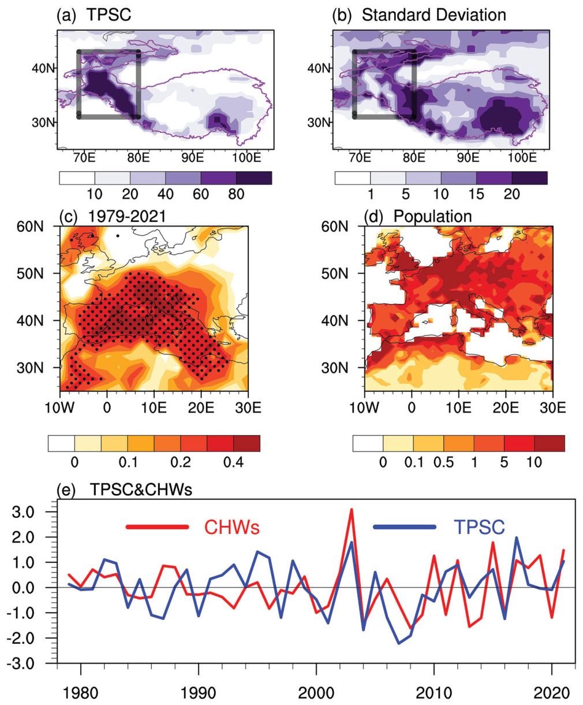
图1。
FIG. 1.
1979–2021年春季青藏高原（a）平均积雪覆盖率（阴影；%）和（b）积雪覆盖率年际标准差（阴影；%）的空间分布。
(a) Spatial distribution of the mean snow cover (shading; %) and (b) standard deviation of interannual snow cover (shading; %) over the TP during spring for the period of 1979–2021.
（c）年际时间尺度上夏季复合热浪频次与春季青藏高原西部积雪（TPSC）指数之间的相关；打点区域表示置信水平超过95%。
(c) Correlations between summer CHW frequency and the spring western TP snow cover (TPSC) index on an interannual time scale; stippled regions denote confidence levels exceeding 95%.
（d）2020年西欧历史人口的空间分布（1 × 105人）。
(d) The spatial distribution of historical populations over WE in 2020 (1 × 105 persons).
（e）夏季西欧复合热浪指数和春季TPSC指数的年际变率。
(e) Interannual variability of the summer WE CHW index and the spring TPSC index.
（a）和（b）中的灰色边框方框表示青藏高原西部区域（31°–43°N，69°–80°E）。
The gray-outlined boxes in (a) and (b) represent the region of western TP (31°–43°N, 69°–80°E).
青藏高原异常加热还会驱动巴基斯坦季风降水型的变化，其机制是青藏高原在对流层上层激发罗斯贝波响应，同时从孟加拉湾东部向巴基斯坦的水汽输送减弱（Wang et al. 2019）。
Anomalous TP heating also drives variations in monsoon rainfall patterns in Pakistan via a TP-induced Rossby wave response in the upper troposphere, coupled with diminished water vapor transport from the eastern Bay of Bengal to Pakistan (Wang et al. 2019).
夏季青藏高原加热增强会通过调节青藏高原西部与地中海上空的纬向环流以及横跨地中海—非洲区域的经向环流，促进萨赫勒中东部降水增加（Nan et al. 2019）。
The augmented TP heating during summer promotes increased precipitation over the central-eastern Sahel by regulating zonal circulation over the western TP and the Mediterranean Sea, as well as meridional circulation across the Mediterranean Sea–Africa region (Nan et al. 2019).
Zhang et al.（2020）揭示，欧洲热浪的年代际增加与欧亚大陆中高纬度积雪覆盖率的下降密切相关。
Zhang et al. (2020) revealed that the interdecadal increase in Europe heat waves is closely linked to the reductions in Eurasian snow cover fraction across mid- to high latitudes.
TPSC减少可能会在欧亚大陆上引发一种独特的遥相关型，通过增强陆地—大气反馈而加剧热浪（Wu et al. 2016）。
Reduced TPSC may induce a distinct teleconnection pattern across the Eurasian continent, enhancing the heat waves by intensifying land–atmosphere feedback (Wu et al. 2016).
然而，TPSC对其上游西欧随后夏季复合热浪可能产生的影响尚未得到识别。
However, the possible impact of TPSC on subsequent summer CHWs across the upstream WE have not been identified.
本研究的目的之一是探讨TPSC可能在西欧复合热浪中发挥的作用。
One of the purposes of the current study is to investigate the possible role of TPSC in the CHWs in WE.
既往研究已经表明，起源于北大西洋的大气罗斯贝波型可对欧亚大陆气候产生显著影响（Qian et al. 2019; Wu and Zhang 2010; Henderson et al. 2018; Liu et al. 2014; Chen et al. 2016; Wu et al. 2011）。
Previous research has demonstrated that atmospheric Rossby wave patterns originating from the North Atlantic can exert a substantial influence on the Eurasian climate (Qian et al. 2019; Wu and Zhang 2010; Henderson et al. 2018; Liu et al. 2014; Chen et al. 2016; Wu et al. 2011).
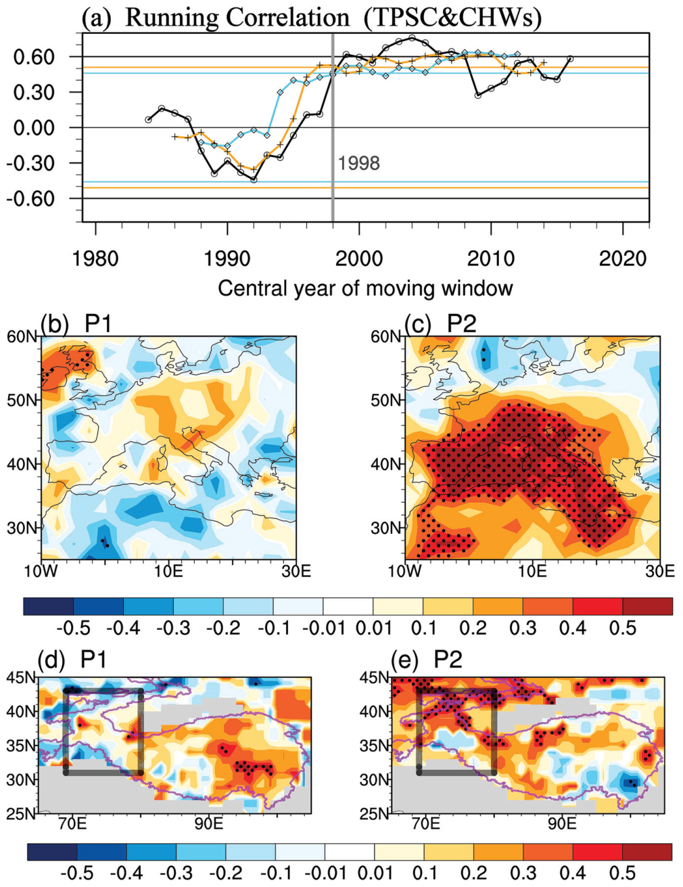
图2。
FIG. 2.
（a）采用11年（黑色）、15年（橙色）和19年（天蓝色）滑动窗口得到的春季TPSC指数与夏季西欧复合热浪指数之间的滑动相关系数。
(a) The sliding correlation coefficients between the spring TPSC and summer WE CHW indices with 11- (black), 15- (orange), and 19-yr (sky-blue) running windows.
黑色、黄色和天蓝色水平线分别表示11年、15年和19年滑动相关的95%置信水平。
The black, yellow, and sky-blue horizontal lines denote the 95% confidence level of the 11-, 15-, and 19-yr sliding correlations.
图中还给出了年际时间尺度上（b）P1（1979–98年）和（c）P2（1999–2021年）期间夏季复合热浪频次与春季TPSC指数之间的相关分布图，以及（d）P1和（e）P2期间TPSC与夏季西欧复合热浪指数之间的相关分布图。
Also shown are correlation maps between summer CHW frequency and the spring TPSC index on the interannual time scale during (b) P1 (1979–98) and (c) P2 (1999–2021) and correlation maps between TPSC and the summer WE CHW index during (d) P1 and (e) P2.
打点区域表示置信水平超过95%。
Stippled regions denote confidence levels exceeding 95%.
（d）和（e）中的灰色边框方框表示青藏高原西部区域（31°–43°N，69°–80°E）。
The gray-outlined boxes in (d) and (e) represent the region of western TP (31°–43°N, 69°–80°E).
值得注意的是，大西洋海表温度（SST）异常可能通过诱发大气环流异常来改变青藏高原的热力状态。
Notably, Atlantic sea surface temperature (SST) anomalies may modify the thermal states on the TP by inducing anomalies in atmospheric circulation.
例如，Cui et al.（2015）揭示，春季青藏高原大气热源在很大程度上取决于副热带西风急流的强度，而后者与北大西洋三极型海温异常模态（NAT）密切相关。
For example, Cui et al. (2015) revealed that the spring atmospheric heat source over the TP depends largely on the strength of the subtropical westerly jet, which is closely related to the North Atlantic tripole SST anomaly pattern (NAT).
Chen et al.（2022）表明，NAT正位相可激发一列罗斯贝波，该波列经过斯堪的纳维亚和乌拉尔山脉后到达青藏高原，最终在青藏高原上空低层诱发正位涡。
Chen et al. (2022) demonstrated that positive NAT can trigger a Rossby wave train, traversing Scandinavia and the Ural Mountains before reaching the TP, ultimately inducing a low-level positive potential vorticity over the TP.
Yu et al.（2021）指出，3月的NAT状况可能影响青藏高原春季感热加热。
Yu et al. (2021) indicated that March NAT conditions could impact spring sensible heating over the TP.
上述研究主要关注大西洋海温异常对青藏高原状况的气候效应（P. Zhang et al. 2022），而深入探讨大西洋海温如何调节TPSC气候影响的研究相对较少。
The aforementioned research has focused on the climate effect of Atlantic SST anomalies on TP conditions (P. Zhang et al. 2022), while relatively few studies have delved into understanding how Atlantic SSTs modulate the climate impacts of TPSC.
Lu et al.（2019）发现，青藏高原加热对热带东大西洋和西非降水型的上游影响也受到大西洋海温异常的调节。
Lu et al. (2019) uncovered that the upstream influence of TP heating on the precipitation patterns over the tropical eastern Atlantic and West Africa is also modulated by the Atlantic SST anomalies.
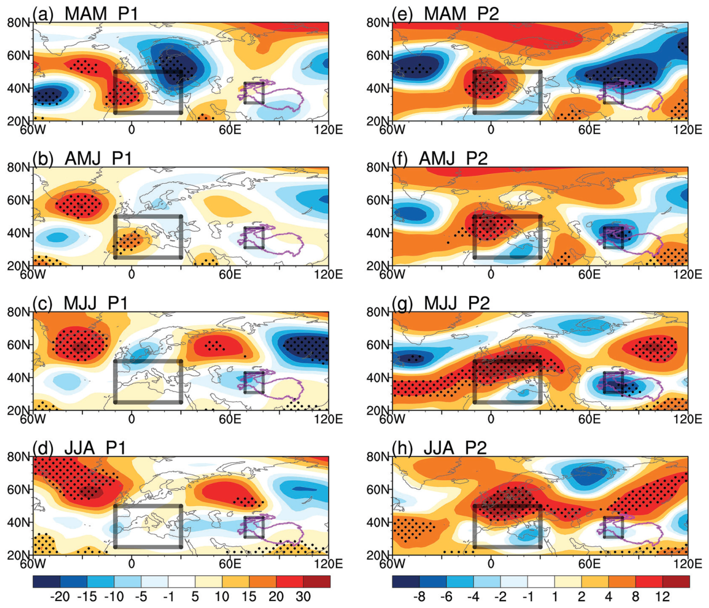
图3。
FIG. 3.
将夏季西欧复合热浪指数作为回归因子得到的（左）P1和（右）P2期间200-hPa位势高度异常（阴影；gpm）：（a）、（e）MAM；（b）、（f）AMJ；（c）、（g）MJJ；（d）、（h）JJA［AMJ为4–6月；MJJ为5–7月］。
Anomalies of the 200-hPa geopotential height (shading; gpm) in (left) P1 and (right) P2 obtained by linear regression against the summer WE CHW index for (a),(e) MAM; (b),(f) AMJ; (c),(g) MJJ; and (d),(h) JJA [AMJ is April–June; MJJ is May–July].
打点区域表示置信水平超过90%。
Stippled regions denote confidence levels exceeding 90%.
灰色边框方框表示西欧（25°–50°N，10°W–30°E）和青藏高原西部（31°–43°N，69°–80°E）区域。
The gray-outlined boxes represent the regions of WE (25°–50°N, 10°W–30°E) and western TP (31°–43°N, 69°–80°E).
因此，本研究的另一个目标是探讨大西洋海温异常是否以及如何影响TPSC与西欧复合热浪之间的潜在关系。
Consequently, another objective of the present study is to investigate whether and how the Atlantic SST anomalies influence the potential relationship between TPSC and CHWs in WE.
本文结构安排如下：第2节介绍本研究所用的数据集和分析方法。
The structure of this work is organized as follows: In section 2, we describe the datasets and analysis methods applied in this study.
第3节考察春季TPSC与西欧夏季复合热浪之间关系的时间演变。
In section 3, we examine the temporal evolution of the relationship between spring TPSC and summer CHWs in WE.
第4节探讨1998年后TPSC对西欧夏季复合热浪影响增强的可能机制。
Section 4 investigates the possible mechanisms for the intensified TPSC impact on summer CHWs in WE after 1998.
第5节给出总结与讨论。
A summary and discussion are presented in section 5.
2. 数据和方法 2. Data and method
a. 数据 a. Data
周积雪数据来自罗格斯大学全球积雪实验室（http://climate.rutgers.edu/snowcover），1979–2021年期间的水平分辨率为25 km。
The weekly snow cover is obtained from the Rutgers University Global Snow Laboratory (http://climate.rutgers.edu/snowcover), which has a horizontal resolution of 25 km for the period of 1979–2021.
随后，我们将积雪数据转换为水平分辨率为1° × 1°的月平均数据（Qian et al. 2020）。
Then, we convert the snow cover data to monthly mean data with a horizontal resolution of 1° × 1° (Qian et al. 2020).
该积雪数据集可靠且特别适用于青藏高原，其在青藏高原西部与ERA5再分析资料吻合良好（在线补充材料中的Fig. S1），这一点也已得到既往研究的证实（Dong et al. 2023a）。
This snow cover dataset is reliable and particularly suitable for the TP, showing good agreement with ERA5 reanalysis in the western part of the TP (Fig. S1 in the online supplemental material), which also has been confirmed by previous studies (Dong et al. 2023a).
逐日ERA5–UTCI是一个由ERA5再分析资料衍生而来的新数据集（https://cds.climate.copernicus.eu/cdsapp#!/dataset/derived-utci-historical?tab=form）（Di Napoli et al. 2021）。
The daily ERA5–UTCI is a novel dataset derived from the ERA5 reanalysis (https://cds.climate.copernicus.eu/cdsapp#!/dataset/derived-utci-historical?tab=form) (Di Napoli et al. 2021).
UTCI是评估热应激的重要指标，能够有效衡量人体舒适度（Di Napoli et al. 2021）。
The UTCI is a valuable metric for evaluating heat stress and can gauge human comfort levels effectively (Di Napoli et al. 2021).
它综合了温度、湿度、风和辐射等多个变量。
It integrates multiple variables such as temperature, humidity, wind, and radiation.
因此，与湿球黑球温度类似（Li et al. 2020; Chen et al. 2022），UTCI可用于定义多变量复合热浪（Zscheischler et al. 2020）。
Therefore, UTCI can be used to define multivariate CHWs (Zscheischler et al. 2020), similar to wet bulb globe temperature (Li et al. 2020; Chen et al. 2022).
月平均地表和大气变量取自ERA5再分析资料（https://www.ecmwf.int/en/forecasts/dataset/ecmwf-reanalysis-v5）（Hersbach et al. 2020），包括地表感热通量、地表潜热通量、地表净短波辐射通量月平均值、位势高度、垂直速度、温度以及经向风和纬向风；这些变量覆盖1979–2021年，水平分辨率为1° × 1°。
Monthly mean surface and atmospheric variables are obtained from ERA5 reanalysis data (https://www.ecmwf.int/en/forecasts/dataset/ecmwf-reanalysis-v5) (Hersbach et al. 2020), including surface sensible heat flux, surface latent heat flux, mean surface net shortwave radiation flux, geopotential height, vertical velocity, temperature, and meridional and zonal wind that are available from 1979 to 2021 with a horizontal resolution of 1° × 1°.
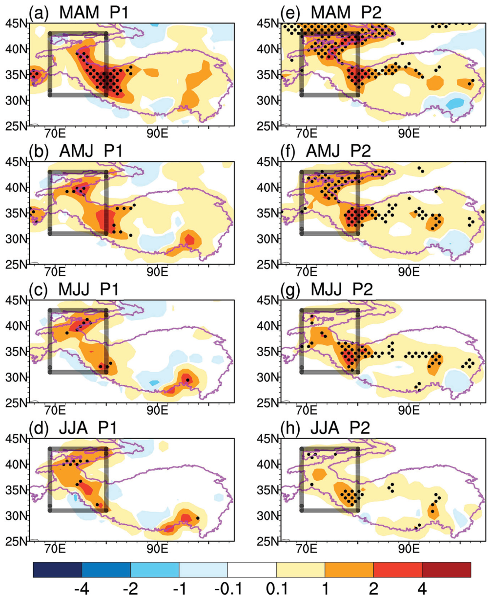
图4。
FIG. 4.
将春季TPSC指数作为回归因子得到的（左）P1和（右）P2期间积雪异常（%）：（a）、（e）MAM；（b）、（f）AMJ；（c）、（g）MJJ；（d）、（h）JJA。
Snow cover anomalies (%) for (left) P1 and (right) P2 obtained by linear regression against the spring TPSC index for (a),(e) MAM; (b),(f) AMJ; (c),(g) MJJ; and (d),(h) JJA.
打点区域表示置信水平超过95%。
Stippled regions denote confidence levels exceeding 95%.
灰色边框方框表示青藏高原西部区域（31°–43°N，69°–80°E）。
The gray-outlined boxes represent the region of western TP (31°–43°N, 69°–80°E).
值得注意的是，按照ECMWF惯例，地表感热通量、地表潜热通量和地表净短波辐射通量月平均值的垂直通量以向下为正。
Notably, the ECMWF convention considers vertical fluxes for surface sensible heat flux, surface latent heat flux, and mean surface net shortwave radiation flux as positive downward.
然而，为与既往研究保持一致，我们将其乘以−1，使其转换为向上为正。
However, to be consistent with previous studies, we multiply them by −1 to convert them to positive upward.
海表温度取自英国气象局哈德利中心（https://www.metoffice.gov.uk/hadobs/hadisst/）（Rayner et al. 2003），水平分辨率为1° × 1°。
The sea surface temperature is available from Met Office Hadley Centre (https://www.metoffice.gov.uk/hadobs/hadisst/) (Rayner et al. 2003), with a horizontal resolution of 1° × 1°.
第4版世界网格人口（GPWv.4）是空间分辨率约1 km的人口分布（人口数和人口密度）模拟数据（https://sedac.ciesin.columbia.edu/data/set/gpw-v4-population-density-adjusted-to-2015-unwpp-country-totals-rev11）。
The fourth version of the Gridded Population of the World (GPWv.4) represents modeled data on the distribution of human population (count and density) at ~1-km spatial resolution (https://sedac.ciesin.columbia.edu/data/set/gpw-v4-population-density-adjusted-to-2015-unwpp-country-totals-rev11).
月AMO指数取自NOAA物理科学部，时间范围为1979–2021年（https://climatedataguide.ucar.edu/climate-data/atlantic-multi-decadal-oscillation-amo）。
The monthly AMO index is obtained from the Physical Sciences Division of NOAA and spans from 1979 to 2021 (https://climatedataguide.ucar.edu/climate-data/atlantic-multi-decadal-oscillation-amo).
b. 方法 b. Method
本研究使用UTCI指数表征多变量复合热浪。
In the current work, the multivariate CHWs are characterized using the UTCI index.
必须强调的是，同时考虑多种气象因素的多变量复合热浪比单变量热浪带来的风险更高（Dong et al. 2023b）。
It is imperative to underscore that multivariate CHWs that take into account several meteorological factors simultaneously pose a higher risk than univariate heat waves (Dong et al. 2023b).
多变量复合热浪的发生意味着同时暴露于极端高温和高湿环境中，而高湿会加剧与高温相关的健康风险（Bröde et al. 2012）。
The occurrence of multivariate CHWs signifies concurrent exposure to extreme high temperatures and high humidity, where the latter can exacerbate health risks associated with high temperatures (Bröde et al. 2012).
复合热浪采用两个标准确定。
The CHWs are determined using two criteria.
第一，逐日UTCI值必须超过以该日为中心的15天窗口内UTCI指数的第90百分位数。
First, daily UTCI values must exceed the 90th percentile of the UTCI index within a centered 15-day window.
第二，该阈值必须至少持续三个连续日（Perkins-Kirkpatrick and Lewis 2020）。
Second, this threshold must be sustained for at least three consecutive days (Perkins-Kirkpatrick and Lewis 2020).
随后，将西欧（25°–50°N，10°W–30°E）区域夏季复合热浪总日数的区域平均值计算为西欧复合热浪指数。
The WE CHW index is then calculated as the regional average of the total number of summer CHW days in WE (25°–50°N, 10°W–30°E).
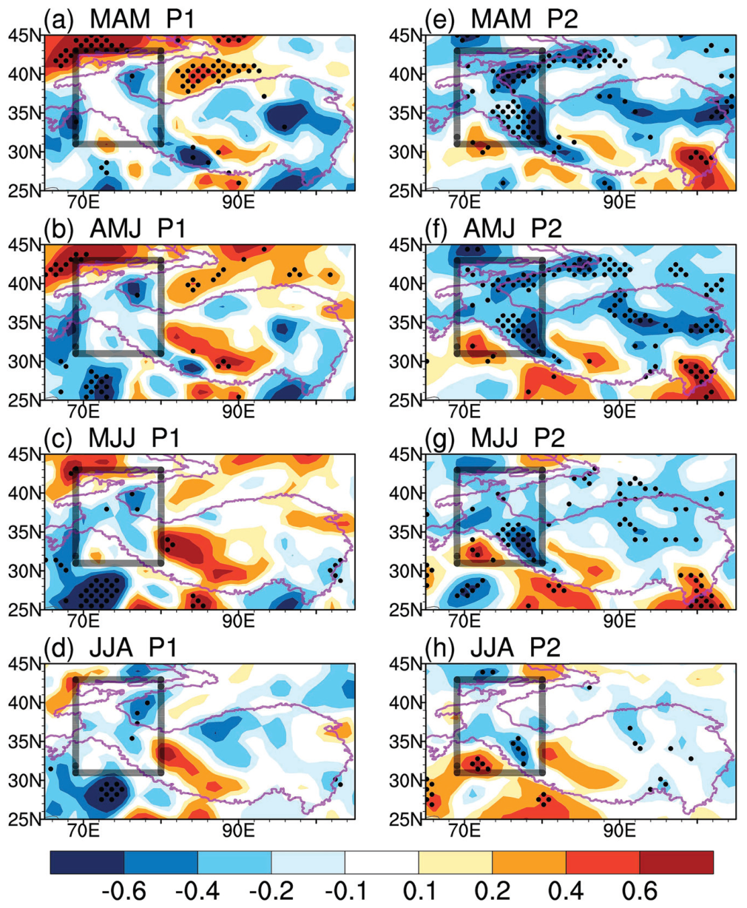
图5。
FIG. 5.
同Fig. 4，但为感热异常（W m−2）。
As in Fig. 4, but for sensible heat anomalies (W m−2).
垂直通量以向上为正。
The vertical fluxes are positive upward.
罗斯贝波源（RWS）采用以下方程计算（Sardeshmukh and Hoskins 1988）：
The Rossby wave source (RWS) is calculated by the following equations (Sardeshmukh and Hoskins 1988):
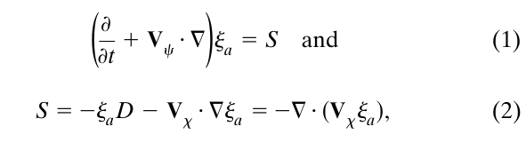
其中，S为罗斯贝波的源或汇，ζa为绝对涡度，D为散度，Vψ为旋转风速，Vχ = ∇χ为辐散风速。
where S is the source or sink of the Rossby wave, ζa is the absolute vorticity, D is the divergence, Vψ is the rotational wind velocity, and Vχ = ∇χ is the divergent wind velocity.
大气热源Q1可表示下垫面积雪对其上方整层大气的影响，其计算采用以下方程（Yanai et al. 1973; Q. Li et al. 2021）：
The atmospheric heat source Q1 can represent the effect of the underlying surface snow on the above column atmosphere, which is calculated using the following equation (Yanai et al. 1973; Q. Li et al. 2021):
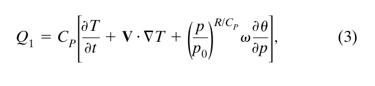
其中，Q1为大气视热源；Cp = 1005 J kg−1 K−1为干空气定压比热；T、V和p分别为空气温度、风和气压；此外，p0 = 1000 hPa，ω、R和θ分别为垂直速度、气体常数和位温。
where Q1 is the atmospheric apparent heat source; Cp = 1005 J kg−1 K−1 is the specific heat at constant pressure for dry air; and T, V, and p are the air temperature, wind, and pressure, respectively; also, p0 = 1000 hPa, and ω, R, and θ are the vertical velocity, gas constant, and potential temperature, respectively.
波作用通量（WAF）的水平分量采用以下方程计算（Takaya and Nakamura 2001）：
The horizontal components of wave activity flux (WAF) are calculated using the following equation (Takaya and Nakamura 2001):
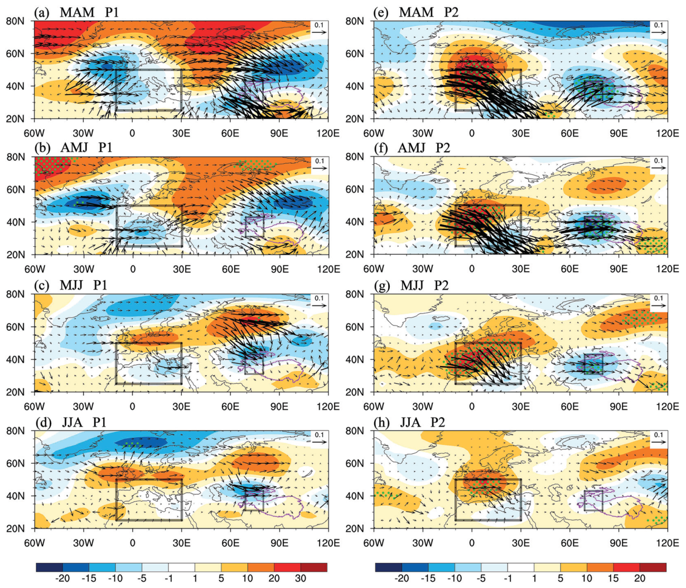
图6。
FIG. 6.
将春季TPSC指数作为回归因子得到的（左）P1和（右）P2期间200-hPa位势高度异常（阴影；gpm）及相应的波作用通量（矢量；m2 s−2）：（a）、（e）MAM；（b）、（f）AMJ；（c）、（g）MJJ；（d）、（h）JJA。
Anomalies of the 200-hPa geopotential height (shading; gpm) and corresponding wave activity flux (vectors; m2 s−2) in (left) P1 and (right) P2 obtained by linear regression against the spring TPSC index for (a),(e) MAM; (b),(f) AMJ; (c),(g) MJJ; and (d),(h) JJA.
绿色打点区域表示置信水平超过95%。
Green stippled regions denote confidence levels exceeding 95%.
灰色边框方框表示西欧（25°–50°N，10°W–30°E）和青藏高原西部（31°–43°N，69°–80°E）区域。
The gray-outlined boxes represent the regions of WE (25°–50°N, 10°W–30°E) and western TP (31°–43°N, 69°–80°E).
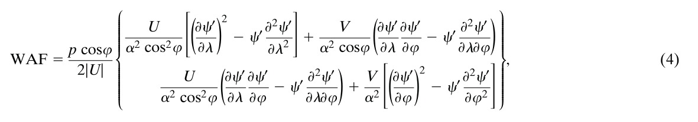
其中，p表示以1000 hPa为尺度的气压；φ和λ分别为纬度和经度；|U|表示气候态风速的大小；a为地球平均半径；U和V分别表示气候态纬向风和经向风；ψ′为扰动地转流函数。
where p represents the pressure scaled by 1000 hPa; φ and λ are latitude and longitude; |U| denotes the climatological magnitude of winds; a is the mean radius of Earth; U and V denote the climatological zonal and meridional wind, respectively; and ψ′ is the perturbed geostrophic streamfunction.
相关系数的显著性水平根据双尾Student’s t检验估计。
The significance levels of the correlation coefficients are estimated based on the two-tailed Student’s t test.
本研究通过去除线性趋势来确定年际变率。
The interannual variability in this study is determined by removing linear trends.
MAM表示3月、4月和5月的平均，JJA表示6月、7月和8月的平均。
MAM represents the averaged months of March, April, and May, and JJA represents the averaged months of June, July, and August.
c. 模式 c. Model
我们采用Watanabe and Kimoto（2000）的线性斜压模式（LBM），考察大西洋海温异常和TPSC强迫所引起的大气响应。
We use the linear baroclinic model (LBM) by Watanabe and Kimoto (2000) to examine the atmospheric response to the anomalous Atlantic Ocean SST and TPSC forcings.
LBM是一个在基本态附近对原始方程进行线性化的干模式。
The LBM is a dry model with primitive equations linearized about basic states.
这里使用的LBM水平分辨率为T42，垂直方向采用20个非均匀间隔的σ层。
Here, we use the LBM with a horizontal resolution of T42 and a vertical resolution of 20 unevenly spaced sigma levels.
为揭示大气对指定海温所诱发加热异常的响应，在北大西洋设置理想化热力加热异常，并将其中心置于0.45 σ层（Ling and Zhang 2013; Wang et al. 2017）。
To reveal the atmospheric response to the prescribed SST-induced heating anomalies, idealized thermal heating anomalies are set in the North Atlantic and centered on the 0.45 sigma level (Ling and Zhang 2013; Wang et al. 2017).
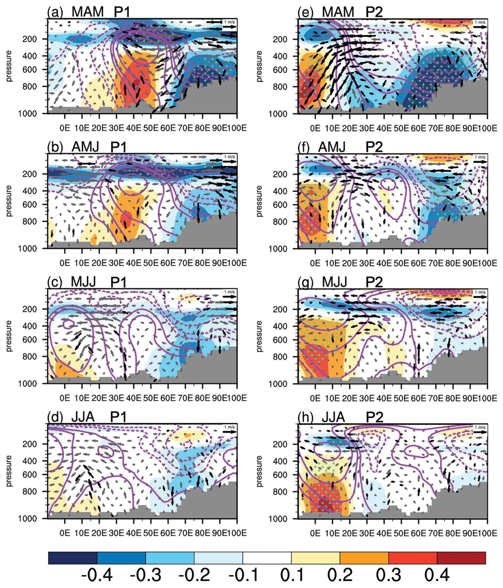
图7。
FIG. 7.
将春季TPSC指数作为回归因子得到的（左）P1和（右）P2期间位势高度（等值线；gpm）、温度（阴影；°C）及相应风场（矢量；垂直速度和纬向风）异常的经向平均（35°–50°N）：（a）、（e）MAM；（b）、（f）AMJ；（c）、（g）MJJ；（d）、（h）JJA。
Meridional mean (35°–50°N) anomalies of the geopotential height (contours; gpm), temperature (shading; °C) and corresponding winds (vectors; vertical velocity and zonal wind) in (left) P1 and (right) P2 obtained by linear regression against the spring TPSC index for (a),(e) MAM; (b),(f) AMJ; (c),(g) MJJ; and (d),(h) JJA.
绿色打点区域表示温度的95%置信水平。
Green stippled regions denote the 95% confidence level for temperature.
黑色矢量表示风场达到90%置信水平。
Black vectors denote the 90% confidence level for winds.
考虑到TPSC引起的冷却主要发生在对流层中层，在青藏高原西部设置理想化热力冷却异常，并将其中心置于0.55 σ层。
Considering that the TPSC-induced cooling primarily occurs in the midtroposphere, idealized thermal cooling anomalies are prescribed in the western TP and centered on the 0.55 sigma level.
模式运行30天，并分析第11–15天的平均结果（Chen et al. 2023）。
The model is run for 30 days, and the average for the 11–15 days is examined (Chen et al. 2023).
关于LBM的更详细信息可在线查阅（https://ccsr.aori.u-tokyo.ac.jp/~lbm/sub/lbm.html）。
More detailed information about the LBM can be found online (https://ccsr.aori.u-tokyo.ac.jp/~lbm/sub/lbm.html).
3. TPSC与复合热浪之间关系的增强
3. Enhanced relationship between TPSC and CHWs
图1a和图1b展示了1979—2021年春季青藏高原积雪（TPSC）的气候态特征。
Figures 1a and 1b illustrate climatological features of spring TPSC during the period 1979–2021.
无论是气候平均值还是年际变率，青藏高原西部的数值都最高。
The western TP has the highest values in both the climatological mean and interannual variability.
Dong等（2023a）提出，青藏高原西部积雪过多会显著影响北半球复合热浪（CHWs），尤其是西欧（WE）地区。
Dong et al. (2023a) proposed that excessive snow cover over the western TP significantly impacts the boreal CHWs, particularly in WE.
同样，我们也识别出1979—2021年西欧复合热浪变率与青藏高原西部积雪之间存在显著关系（在线补充材料中的图S2a）。
Likewise, we also identify a significant relationship between CHW variability in WE and snow cover over the western TP from 1979 to 2021 (Fig. S2a in the online supplemental material).
表1. P1和P2期间不同季节TPSC与夏季西欧复合热浪之间的相关系数。
TABLE 1. The correlation coefficients between the TPSC across various seasons and summer WE CHWs during P1 and P2.
请注意，根据Student’s t检验，一个、两个和三个星号分别表示置信水平超过90%、95%和99%。
Note that one, two, and three asterisks respectively denote confidence levels exceeding 90%, 95% and 99% according to the Student’s t test.
|
相关性 Correlation |
MAM MAM |
AMJ AMJ |
MJJ MJJ |
JJA JJA |
|---|---|---|---|---|
|
CHWs P1 CHWs P1 |
−0.15 −0.15 |
−0.39* −0.39* |
−0.33 −0.33 |
−0.09 −0.09 |
|
CHWs P2 CHWs P2 |
0.63*** 0.63*** |
0.61*** 0.61*** |
0.54*** 0.54*** |
0.41** 0.41** |
因此，通过对青藏高原西部（31°–43°N，69°–80°E；图1a、b中的灰色边框框区）春季积雪进行面积加权平均，构建了一个TPSC指数，以表征春季青藏高原西部TPSC的年际变率（图1e中的蓝线）。
Hence, a TPSC index is constructed by area-weighted averaging of spring snow cover over the western TP (31°–43°N, 69°–80°E) (gray-outlined boxes in Figs. 1a,b) to represent the interannual variability of spring western TPSC (blue line in Fig. 1e).
夏季复合热浪频率与春季TPSC指数之间的相关分布图（图1c）显示出显著的正相关，主要覆盖西欧（25°–50°N，10°W–30°E）。
The correlation map between summer CHW frequency and the spring TPSC index (Fig. 1c) shows significant positive correlations, predominantly covering WE (25°–50°N, 10°W–30°E).
该地区人口稠密（图1d），而先前研究表明，复合热浪的变化会对该地区人类健康产生重大影响（Ballester et al. 2023）。
This region has a dense population (Fig. 1d), and prior research has suggested that variations in CHWs can have a substantial impact on the human health in this region (Ballester et al. 2023).
因此，通过对西欧复合热浪进行面积加权平均，构建了夏季西欧复合热浪指数（图1e中的红线）。
The summer WE CHW index is therefore constructed by area-weighted averaging of CHWs in WE (red line in Fig. 1e).
1979—2021年春季TPSC指数与夏季西欧复合热浪指数之间的时间相关系数为0.45（显著性水平 p < 0.01），表明春季TPSC变化与西欧夏季复合热浪之间关系密切。
The temporal correlation coefficient between the spring TPSC and summer WE CHW indices for the period 1979–2021 is 0.45 (significance level p < 0.01), suggesting a close relationship between the variation of spring TPSC and summer CHWs in WE.
这种正相关主要集中在最近二十年，尤其是在西欧出现强暖异常的年份（例如2003、2012、2015、2017和2021年）（图1c），并与春季积雪过多同时出现。
The positive correlation is predominantly concentrated within the last two decades, notably during years with strong warm anomalies in WE (e.g., 2003, 2012, 2015, 2017, and 2021) (Fig. 1c), coinciding with excessive spring snow cover.
相比之下，1998年以前春季TPSC与西欧夏季复合热浪的变化一致性很弱。
In contrast, the consistency between the variations of the spring TPSC and summer CHWs in WE was very weak before 1998.
为进一步研究这种演变中的关系，我们采用不同窗口计算了春季TPSC指数与夏季西欧复合热浪指数之间的滑动相关系数（图2a）。
To further investigate this evolving relationship, we computed sliding correlation coefficients between spring TPSC and summer WE CHW indices using varying windows (Fig. 2a).
11年滑动相关系数显示，1998年以前（P1；1979—1998年）两者关系较弱，但1998年以后（P2；1999—2021年）该关系显著增强。
The 11-yr sliding correlation coefficient reveals a weak relationship before 1998 (P1; 1979–98), but a significant strengthening of the relationship after 1998 (P2; 1999–2021).
采用其他窗口长度也得到类似结果。
Similar results are obtained with other window lengths.
从空间上看，P1和P2期间夏季西欧复合热浪与春季TPSC之间的关系呈现显著差异。
Spatially, the relationship between summer WE CHWs and spring TPSC exhibits notable differences during P1 and P2.
P1期间观测到较弱且不显著的相关（图2b），而P2期间则呈现较强且显著的相关（图2c）。
Weak and nonsignificant correlation is observed during P1 (Fig. 2b), whereas strong and significant correlation is evident during P2 (Fig. 2c).
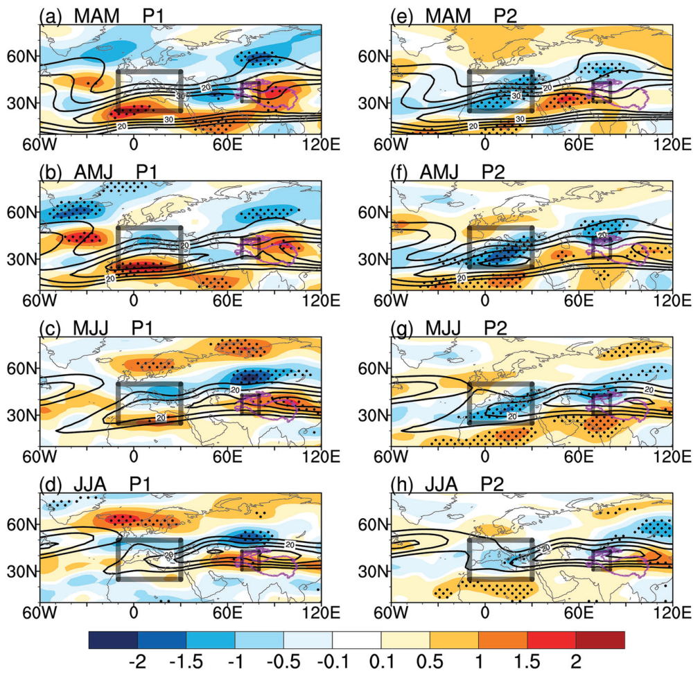
图8. 通过对春季TPSC指数进行线性回归得到的200 hPa纬向风异常（阴影；m s−1），左列为P1、右列为P2，其中（a）、（e）为MAM；（b）、（f）为AMJ；（c）、（g）为MJJ；（d）、（h）为JJA。
FIG. 8. Zonal wind anomalies (shading; m s−1) at 200 hPa for (left) P1 and (right) P2 obtained by linear regression against the spring TPSC index for (a),(e) MAM; (b),(f) AMJ; (c),(g) MJJ; and (d),(h) JJA.
黑色等值线表示P1和P2期间的气候态急流（m s−1）。
Black contours represent the climatological jet stream (m s−1) during P1 and P2.
黑色打点区域表示置信水平超过95%。
Black stippled regions denote confidence levels exceeding 95%.
灰色边框框区表示西欧（25°–50°N，10°W–30°E）和青藏高原西部（31°–43°N，69°–80°E）区域。
The gray-outlined boxes represent the regions of WE (25°–50°N, 10°W–30°E) and western TP (31°–43°N, 69°–80°E).
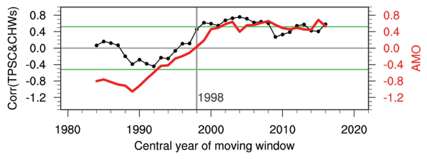
图9. 夏季西欧复合热浪指数与春季TPSC指数之间的11年滑动相关系数（黑线），以及标准化春季AMO指数的11年滑动平均。
FIG. 9. The 11-yr sliding correlation coefficients between the summer WE CHW and the spring TPSC indices (black line), along with the 11-yr running averages of the normalized spring AMO index.
绿色水平线表示11年滑动相关的95%置信水平。
The green horizontal lines denote the 95% confidence level of the 11-yr sliding correlation.
与此同时，P1期间与西欧夏季复合热浪相关的青藏高原西部春季积雪异常较弱且不显著（图2d），而P2期间青藏高原西部则出现较强且显著的正积雪异常（图2e）。
Simultaneously weak and insignificant spring snow cover anomalies are observed over the western TP associated with summer CHWs in WE during P1 (Fig. 2d), whereas strong and significant positive snow cover anomalies are evident over the western TP during P2 (Fig. 2e).
这些发现证实，1998年以后春季TPSC与西欧夏季复合热浪之间的关系有所增强。
These findings confirm a strengthening of the relationship between spring TPSC and summer CHWs in WE after 1998.
为理解TPSC—CHWs关系显著增强背后的机制，我们研究了P1和P2期间与西欧夏季复合热浪相关的大气环流从前期春季到随后夏季的演变（图3）。
To comprehend the mechanisms behind the notable strengthening of the TPSC–CHWs relationship, we investigate the evolution of atmospheric circulations associated with summer CHWs in WE from the preceding spring to the subsequent summer during P1 and P2 (Fig. 3).
P1期间，与西欧复合热浪相关的大气环流总体较弱（图3a–d）。
During P1, the atmospheric circulations associated with CHWs over WE are generally weak (Figs. 3a–d).
相比之下，P2期间一个显著的异常高压系统控制西欧，并从春季持续到夏季（图3e–h）。
In contrast, during P2, a significant anomalous high pressure system dominated WE and persisted from spring to summer (Figs. 3e–h).
该异常高压系统在前期春季起源于北大西洋（图3e），随时间发展，并在夏季向下游延伸至青藏高原西侧（图3h）。
This anomalous high pressure system originated in the North Atlantic Ocean during the preceding spring (Fig. 3e), developed over time, and extended downstream to the western side of the TP during the summer (Fig. 3h).
与此同时，P2期间从春季到夏季，青藏高原西部上空存在一个显著的异常气旋式环流中心。
Meanwhile, there is a prominent anomalous cyclonic circulation centered over the western TP from spring to summer during P2.
因此，西欧高压—青藏高原西部低压（WEH–TPL）型可能是春季TPSC与西欧夏季复合热浪之间关系增强的原因。
Consequently, a pattern of western Europe high–western TP low (WEH–TPL) appears to be responsible for the intensified relation between the spring TPSC and the summer WE CHWs.
我们还观测到P1和P2期间北大西洋上空从春季到夏季存在显著的大气环流异常。
We also observe significant anomalies in atmospheric circulations over the North Atlantic Ocean from spring to summer during P1 and P2.
P1期间，存在一种经向偶极型，其特征是中纬度为低压、中高纬度为高压。
In P1, there is a meridional dipole pattern characterized by low pressure in the midlatitudes and high pressure in the mid-to-high latitudes.
P2期间则出现相反的偶极型，其特征是中纬度为高压、中高纬度为低压。
In P2, an opposite dipole pattern emerges, featuring high pressure in the midlatitudes and low pressure in the mid-to-high latitudes.
大西洋上空这些截然不同的大气环流异常可触发下游大气响应，进而可能影响复合热浪与TPSC之间的联系（Kushnir and Lau 1992; Kushnir 1994; Kushnir et al. 2002; Knight et al. 2006; Peings and Magnusdottir 2014）。
These distinct atmospheric circulation anomalies over the Atlantic Ocean can trigger downstream atmospheric responses, potentially influencing the connection between CHWs and TPSC (Kushnir and Lau 1992; Kushnir 1994; Kushnir et al. 2002; Knight et al. 2006; Peings and Magnusdottir 2014).
4. CHW–TPSC联系增强的原因
4. Reasons for strengthening the CHW–TPSC connection
a. 青藏高原地区雪—大气耦合的增强
a. Enhanced snow–atmosphere coupling over the TP
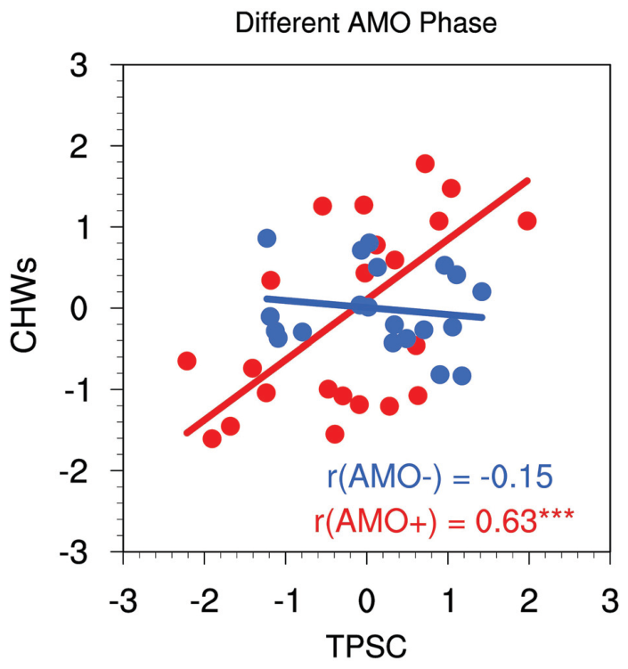
图10. −AMO阶段（蓝点）和+AMO阶段（红点）夏季西欧复合热浪指数相对于春季TPSC指数的散点图。
FIG. 10. Scatterplots of the summer WE CHW index against the spring TPSC index during −AMO (blue dots) and +AMO (red dots) phases.
先前研究表明，青藏高原上空的大气环流可通过雪反照率效应和水文效应受到地面积雪异常的调制（Cohen and Rind 1991; W. Li et al. 2018; You et al. 2020; Liu et al. 2020）。
Previous work revealed that the atmospheric circulations above the TP can be modulated by the surface snow cover anomalies via snow albedo and hydrological effect (Cohen and Rind 1991; W. Li et al. 2018; You et al. 2020; Liu et al. 2020).
高海拔和雪—大气耦合效应使青藏高原西部的积雪能够持续到夏季（Xu and Dirmeyer 2011; Liu et al. 2022）。
The high elevation and snow–atmosphere coupling effect enable snow cover on the western TP to persist into summer (Xu and Dirmeyer 2011; Liu et al. 2022).
因此，春季TPSC被认为是随后夏季北半球大气环流异常的一个潜在预测因子。
Consequently, spring TPSC is recognized as a potential predictor of atmospheric circulation anomalies in the Northern Hemisphere during the subsequent summer.
先前研究表明，青藏高原低压系统可能通过垂直环流或罗斯贝波响应诱发西欧高压（Lu et al. 2018, 2019; Nan et al. 2019）。
Previous studies demonstrated that the TP low pressure system may have the potential to induce WE high pressure via the vertical circulation or Rossby wave responses (Lu et al. 2018, 2019; Nan et al. 2019).
也就是说，青藏高原积雪诱发的大气环流异常可充当“桥梁”，将青藏高原积雪的影响传递至西欧高压系统，而该系统对西欧夏季复合热浪十分重要。
That is, TP snow cover–induced atmospheric circulation anomalies can act as a “bridge” to carry the TP snow cover impact on the WE high pressure systems, which is important for the summer WE CHWs.
然而，TPSC具有内在的年代际变率，这种变率也体现在其对大气的影响中（Qian et al. 2020; C. Zhang et al. 2023; R. Zhang et al. 2023）。
However, the TPSC exhibits inherent interdecadal variability, which also manifests in its atmospheric impacts (Qian et al. 2020; C. Zhang et al. 2023; R. Zhang et al. 2023).
图4给出了P1和P2期间从春季到夏季TPSC与春季TPSC指数之间关系的回归分布图。
Figure 4 presents regression maps illustrating the relationship between TPSC and the spring TPSC index from spring to summer during P1 and P2.
在两个时期，青藏高原中西部均存在显著偏多的积雪，并从春季持续到夏季。
In both periods, significant excessive snow cover in the west-central TP is evident and persists from spring to summer.
相比之下，P2期间的TPSC异常更为显著（图4e），不仅覆盖中西部地区，还延伸至青藏高原西北部。
In comparison, anomalous TPSC is more pronounced in P2 (Fig. 4e), not only covering the west-central region, but also extending to the northwest TP.
重要的是，该时期春季TPSC的持续性优于P1期间（图4f–h）。
Importantly, spring TPSC in this period has a better persistence than during P1 (Figs. 4f–h).
P1期间，青藏高原西部观测到较弱的感热负异常（图5a–d）。
During P1, weak and negative sensible heat anomalies are observed over the western TP (Figs. 5a–d).
相比之下，P2期间青藏高原西部出现强且显著的感热负异常，并从春季持续到夏季（图5e–h）。
In contrast, strong and significant negative sensible heat anomalies emerge over the western TP during P2, persisting from spring through summer (Figs. 5e–h).
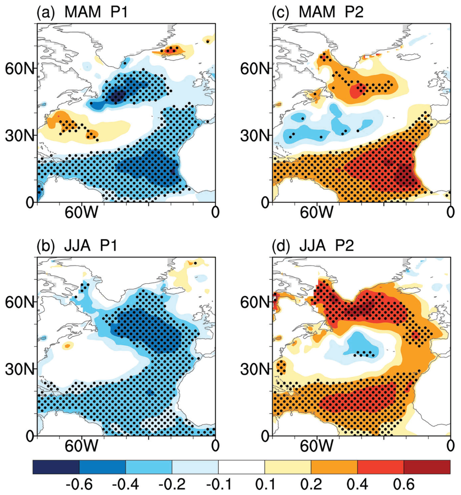
图11. 海表温度（SST）异常（°C），其中（a）、（b）为P1期间相对于反相春季AMO指数的线性回归结果，（c）、（d）为P2期间相对于春季AMO指数的线性回归结果；上排为MAM，下排为JJA。
FIG. 11. Sea surface temperature (SST) anomalies (°C) for (a),(b) P1 obtained by linear regression against the inverted spring AMO index and (c),(d) P2 obtained by linear regression against the spring AMO index for (top) MAM and (bottom) JJA.
黑色打点区域表示置信水平超过95%。
Black stippled regions denote confidence levels exceeding 95%.
与感热通量相比，潜热通量的作用并不显著（在线补充材料中的图S3）。
In comparison with sensible heat flux, the role of latent heat flux is insignificant (Fig. S3 in the online supplemental material).
此外，更具持续性的积雪还使P2期间青藏高原西部出现更强的向上短波辐射正异常（在线补充材料中的图S4）。
In addition, more persistent snow cover also leads to more positive anomalous upward shortwave radiation over the western TP during P2 (Fig. S4 in the online supplemental material).
这些发现表明，与1998年以前相比，1998年以后青藏高原西部TPSC具有更好的持续性，并对其上方大气产生更显著的冷却影响。
These findings suggest that the western TPSC exhibits better persistence and exerts a more significant cooling impact on the above atmosphere after than before 1998.
通过比较P1和P2期间与春季TPSC变化相关的大气环流，考察其年代际变化（图6）。
The interdecadal changes are examined by comparing the atmospheric circulations associated with the variation of spring TPSC in P1 and P2 (Fig. 6).
春季，与青藏高原西部TPSC偏多及其冷却效应相对应，青藏高原上空观测到高层异常低压系统（图6a、e）。
In spring, corresponding to more than normal western TPSC and the cooling effect, the upper-level anomalous low pressure systems are observed above TP (Figs. 6a,e).
然而，P1与P2之间，从春季到夏季与春季TPSC相关的异常环流也存在明显差异。
Nevertheless, obvious differences are also noticed in the spring TPSC-related anomalous circulations from spring to summer between P1 and P2.
P1期间，异常大气环流主要盛行于高纬度地区，一列罗斯贝波从北大西洋起源，沿欧亚大陆高纬度地区向东北传播，在贝加尔湖附近转向东南，并导致青藏高原西北部出现低压异常（图6a）。
During P1, anomalous atmospheric circulations are mainly prevailing over high latitudes, with a Rossby wave train originating from the North Atlantic and propagating northeastward along high-latitude Eurasia, turning southeastward in the vicinity of Lake Baikal, and leading to a low pressure anomaly over the northwest TP (Fig. 6a).
从春季到夏季，该低压异常总体较弱（图6a–d）。
This low pressure anomaly is generally weak from spring to summer (Figs. 6a–d).
相比之下，P2期间，一列起源于北大西洋的罗斯贝波向东南传播，经过西欧，随后转向东北并抵达青藏高原西部，从而在春季诱发青藏高原西部显著的低压异常（图6e）。
In contrast, during P2, a Rossby wave train originating from the northern Atlantic propagates southeastward, passes through WE, and then turns northeastward and reaches the western TP, inducing a significant low pressure anomaly over the western TP in spring (Fig. 6e).
此外，由于TPSC的持续性以及雪—气反馈效应，P2期间青藏高原西部显著的低压异常从春季持续到夏季（图6e–g）。
Furthermore, the significant low pressure anomaly over the western TP persists from spring to summer during P2 (Figs. 6e–g), owing to the persistence of the TPSC and snow–air feedback effect.
在此期间，与TPSC相关的环流异常与图3e–h所示环流存在许多相似之处。
In this period, the TPSC-related circulation anomalies bear many similarities to those shown in Figs. 3e–h.
这表明TPSC在WEH–TPL型的年代际变化以及西欧高压系统与青藏高原西部低压系统之间的联系中发挥着重要作用。
It indicates an important role of the TPSC in the interdecadal changes in the pattern of WEH–TPL and the linkage between the western Europe high pressure and the western TP low pressure systems.
此外，P2期间春季TPSC的变化可能是对异常大西洋SST所激发的春季罗斯贝波列的响应。
Moreover, during P2, the variations of spring TPSC may be a response to the spring Rossby wave train excited by abnormal Atlantic SST.
因此，偏多的TPSC又通过雪—气相互作用反馈于青藏高原西部的低压。
Consequently, the excessive TPSC in turn provides feedback on the low pressure over the western TP through snow–air interaction.
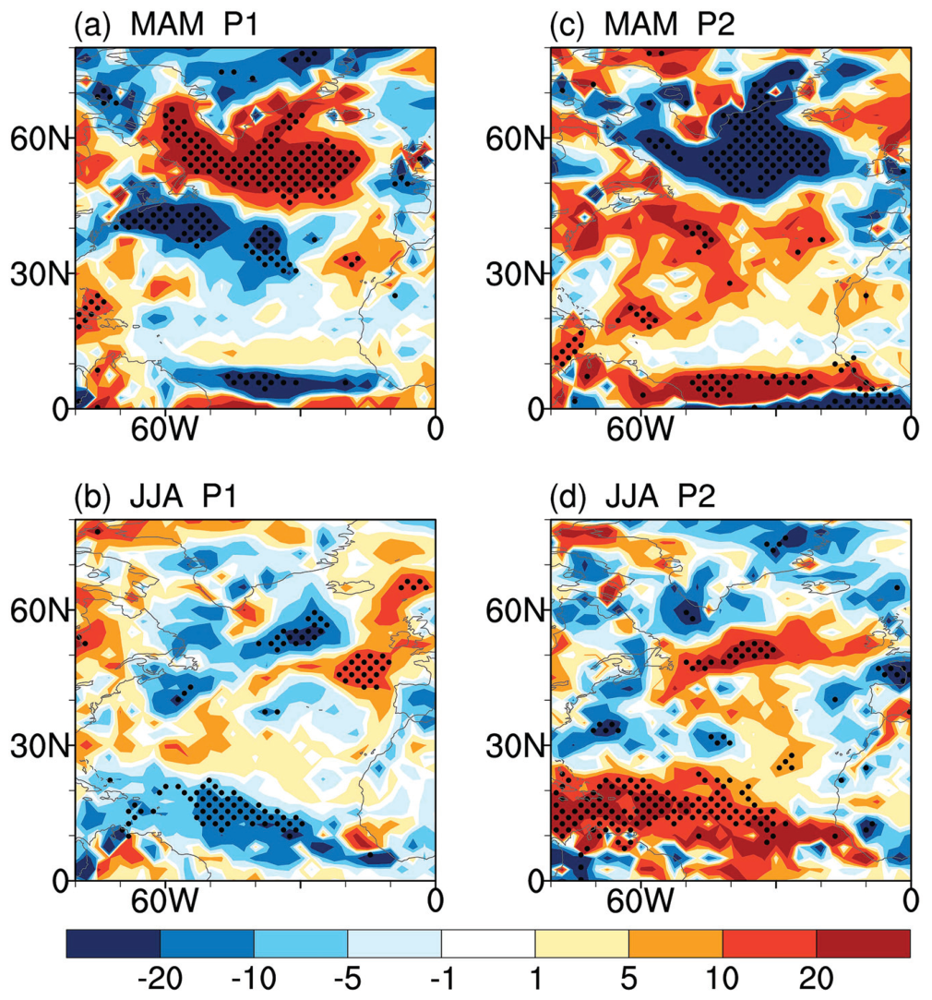
图12. 同图11，但为Q1（W m−2）场。
FIG. 12. As in Fig. 11, but for the Q1 (W m−2) field.
这些结果还表明，除TPSC的内在变率外，大西洋SST异常对于从春季到夏季WEH–TPL型的形成和维持也很重要。
These results also suggest that, besides the inherent variability of TPSC, the Atlantic SST anomaly is also important in generating and maintaining the WEH–TPL pattern from spring to summer.
下一节将详细分析大西洋SST的作用。
The next section will provide a detailed analysis of the role of Atlantic SST.
为更深入地理解WEH–TPL型，图7给出了两个时期与春季TPSC指数相关的异常大气环流和温度型的垂直剖面。
To gain a deeper comprehension of the WEH–TPL pattern, Fig. 7 presents vertical profiles illustrating anomalous atmospheric circulations and temperature patterns associated with the spring TPSC index in two periods.
与春季青藏高原西部TPSC偏多相联系，由于反照率效应，青藏高原上空出现低温和低压异常，而两个时期的欧亚大陆上空均可观察到高温和高压异常（图7a、e）。
Associated with excessive spring western TPSC, cold temperature and low pressure anomalies are noticed over TP due to albedo effects, while warm temperature and high pressure anomalies over the Eurasia continent can be noticed for both periods (Figs. 7a,e).
然而，两者之间存在显著差异。
However, there are notable distinctions.
P1期间，与春季TPSC相关的低压较弱，并且主要局限于60°E以东的青藏高原区域（图7a）。
In P1, the spring TPSC-related low pressure is weaker and primarily confined to TP regions east of 60°E (Fig. 7a).
纬向垂直环流较弱（图7c、d），西欧异常高压并不显著，且在晚春以后大幅减弱（图7b）。
The zonal vertical circulations are weak (Figs. 7c,d) and the anomalous western Europe high pressure is not significant and diminishes substantially after late spring (Fig. 7b).
相反，P2期间，青藏高原西部TPSC偏多与一个控制青藏高原西部对流层并向西延伸的深厚低压异常相关。
Conversely, during P2, excessive western TPSC is associated with a profound low pressure anomaly dominating the troposphere over the western TP and extending westward.
该异常低压的东、西两侧伴有显著的上升和下沉气流，表现为一个纬向垂直环流（图7e）。
This anomalous low pressure is accompanied by prominent ascending and descending air motion along its eastern and western edges, manifesting as a vertical zonal circulation (Fig. 7e).
低压异常东侧的上升气流通过雪—大气正反馈机制有利于TPSC的持续，这与先前研究的记载一致（Saito et al. 2004; Barriopedro et al. 2006）。
The ascending airflow to its east of the low pressure anomalies favors the persistence of the TPSC through a snow–atmosphere positive feedback mechanism, as documented in previous studies (Saito et al. 2004; Barriopedro et al. 2006).
而其西侧的下沉气流则有助于增强西欧的高压异常。
While the descending airflow to its west side contributes to the intensification of a high pressure anomaly in WE.
因此，西欧低层对流层温度从3月到6月显著升高，并在夏季达到峰值，从而促进P2期间产生更多夏季复合热浪。
Consequently, lower tropospheric temperatures in WE experience significant enhancement from March to June, peaking during the summer season, thereby promoting the generation of more summer CHWs during P2.
上述结果揭示了从P1到P2春季TPSC的年代际变化。
The above results reveal interdecadal variations in spring TPSC from P1 to P2.
在1998年以后，青藏高原西部TPSC的覆盖范围显著扩大，持续性也显著增强。
In the post-1998 period, there is a notable intensification in both the extent and persistence of western TPSC.
这种增强导致青藏高原上空的上升运动加强，并使西欧上空相应的下沉运动加强。
This intensification results in enhanced upward motion over the TP and corresponding downward motion over WE.
因此，它强化了WEH–TPL大气环流型，使1998年以后西欧复合热浪发生得更加频繁。
Consequently, it fortifies the WEH–TPL atmospheric pattern, contributing to more frequent occurrence of CHWs in WE after 1998.
这一结论进一步得到如下事实的证实：P2期间不同季节的TPSC与西欧夏季复合热浪之间相关系数较高，而P1期间相关性较弱（表1）。
This conclusion is further confirmed by the high correlation coefficients between the TPSC across different seasons and summer WE CHWs during P2, while demonstrating weaker correlations during P1 (Table 1).
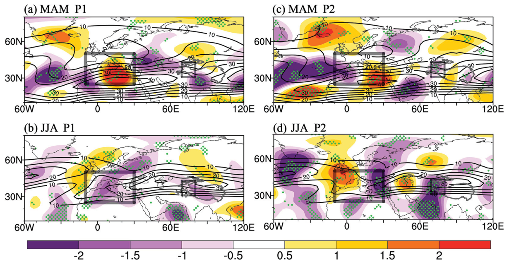
图13. 通过对春季AMO指数进行线性回归得到的200 hPa罗斯贝波源（RWS）异常（阴影；10−11 s−2），其中（a）、（b）为P1，（c）、（d）为P2；左列为MAM，右列为JJA。
FIG. 13. Rossby wave source (RWS) anomalies (shading; 10−11 s−2) at 200 hPa for (a),(b) P1 and (c),(d) P2 obtained by linear regression against the spring AMO index, for (left) MAM and (right) JJA.
黑色等值线表示P1和P2期间的气候态急流（m s−1）。
Black contours represent the climatological jet stream (m s−1) during P1 and P2.
绿色打点区域表示置信水平超过90%。
Green stippled regions denote confidence levels exceeding 90%.
灰色边框框区表示西欧（25°–50°N，10°W–30°E）和青藏高原西部（31°–43°N，69°–80°E）区域。
The gray-outlined boxes represent the regions of WE (25°–50°N, 10°W–30°E) and western TP (31°–43°N, 69°–80°E).
先前研究表明，双急流以两个沿纬向分布的强异常西风带以及其间一个具有异常东风的中纬度带为特征，可能会阻碍波能向北极和赤道传播。
Previous work has revealed that the double jets, characterized by two zonally oriented bands of strong anomalous westerly winds and a midlatitudinal belt featuring anomalous easterly winds, may impede the propagation of wave energy toward the Arctic and the equator.
因此，它可能有助于罗斯贝波的放大和减速，继而可能导致极端天气事件持续（Petoukhov et al. 2013; Coumou et al. 2014; Rousi et al. 2022）。
It, therefore, may contribute to the amplification and deceleration of Rossby waves, which, in turn, can lead to the persistence of extreme weather events (Petoukhov et al. 2013; Coumou et al. 2014; Rousi et al. 2022).
为考察异常TPSC如何通过与其相关的WEH–TPL型影响西风急流，图8给出了P1和P2期间与春季TPSC指数相关的纬向风异常。
To inspect how anomalous TPSC influences the westerly jets through the associated WEH–TPL pattern, Fig. 8 presents the zonal wind anomalies associated with the spring TPSC index during P1 and P2.
P1期间，西欧上空的西风急流出现显著变化，其特征是20°N附近加强、40°N附近减速（图8a、b）。
During P1, notable alterations in the westerly jets over WE are noticed, characterized by an intensification near 20°N and a deceleration near 40°N (Figs. 8a,b).
然而，这些变化在随后夏季不那么显著（图8c、d）。
However, these changes are less prominent during the subsequent summer (Figs. 8c,d).
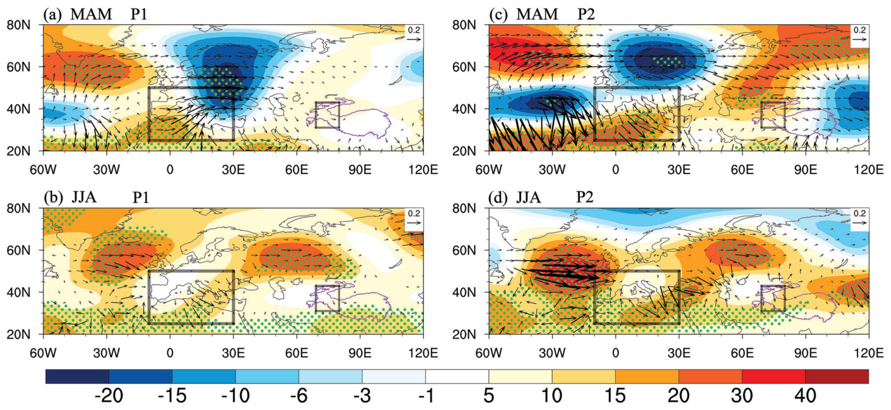
图14. 通过对春季AMO指数进行线性回归得到的200 hPa位势高度异常（阴影；gpm）和相应的波作用通量（矢量；m2 s−2），其中（a）、（b）为P1，（c）、（d）为P2；上排为MAM，下排为JJA。
FIG. 14. Anomalies of the 200-hPa geopotential height (shading; gpm) and corresponding wave activity flux (vectors, m2 s−2) in (a),(b) P1 and (c),(d) P2 obtained by linear regression against the spring AMO index for (top) MAM and (bottom) JJA.
绿色打点区域表示置信水平超过95%。
Green stippled regions denote confidence levels exceeding 95%.
灰色边框框区表示西欧（25°–50°N，10°W–30°E）和青藏高原西部（31°–43°N，69°–80°E）区域。
The gray-outlined boxes represent the regions of WE (25°–50°N, 10°W–30°E) and western TP (31°–43°N, 69°–80°E).
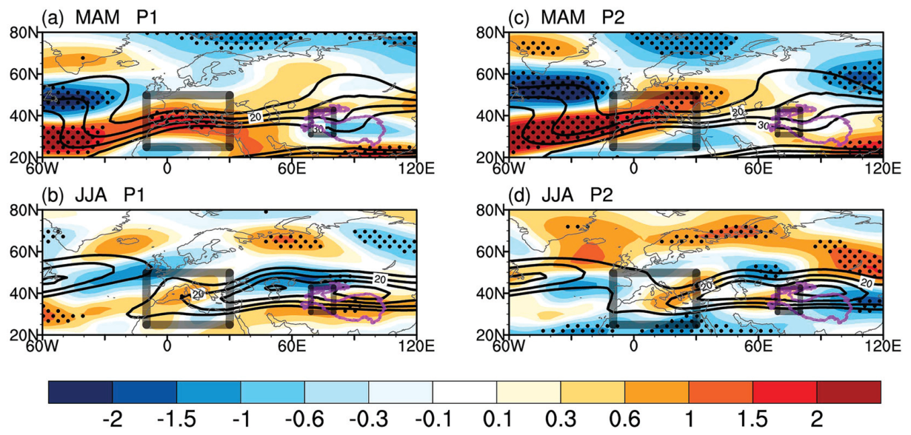
图15. 通过对春季AMO指数进行线性回归得到的200 hPa纬向风异常（m s−1），其中（a）、（b）为P1，（c）、（d）为P2；上排为MAM，下排为JJA。
FIG. 15. Zonal wind anomalies (m s−1) at 200 hPa for (a),(b) P1 and (c),(d) P2 obtained by linear regression against the spring AMO index for (top) MAM and (bottom) JJA.
黑色等值线表示P1和P2期间的气候态急流（m s−1）。
Black contours represent the climatological jet stream (m s−1) during P1 and P2.
黑色打点区域表示置信水平超过90%。
Black stippled regions denote confidence levels exceeding 90%.
灰色边框框区表示西欧（25°–50°N，10°W–30°E）和青藏高原西部（31°–43°N，69°–80°E）区域。
The gray-outlined boxes represent the regions of WE (25°–50°N, 10°W–30°E) and western TP (31°–43°N, 69°–80°E).
相比之下，P2期间西风出现显著变化，双急流型在西欧持续至夏季（图8e–h），其中西风减速和双急流的南支尤其明显。
In contrast, during P2, significant changes in the westerlies are observed, and the double jet pattern persists into the summer months in WE (Figs. 8e–h), especially the decelerating westerlies and the southern component of the double jets.
双急流的这种增强和持续可归因于春季青藏高原西部TPSC偏多对西欧高压系统的持续影响，而该高压系统与其北侧西风增强、南侧西风减弱相关。
This enhancement and persistence of the double jets can be attributed to the sustained impact of excessive western spring TPSC on the high-pressure system over WE, which is associated with enhanced and decreased westerly winds to the north and south of the high pressure.
与此同时，增强的双急流反过来又可加强并维持西欧上空的高压系统，为P2期间西欧夏季复合热浪创造有利条件。
At the same time, the enhanced double jets in turn can reinforce and maintain the high pressure system over WE, promoting a favorable condition for summer WE CHWs during P2.
b. AMO对TPSC–CHW联系的调制b. Modulations of the TPSC–CHW connection by the AMO
北大西洋海表温度（SST）的年代际变化主要受大西洋多年代际振荡（AMO）支配，其影响在夏季最为显著（Knight et al. 2006）。
Interdecadal variations in SST in the North Atlantic are primarily dominated by the AMO, with its most significant effects during the summer season (Knight et al. 2006).
上一节表明，1998年后TPSC–CHW联系经历了年代际增强（Fig. 2a）。
The previous section revealed that the TPSC–CHW connection experienced an interdecadal strengthening after 1998 (Fig. 2a).
本节考察AMO对TPSC–CHW联系变化可能产生的影响。
In this section, we examine the possible impact of the AMO on the changes in the TPSC–CHW connection.
Figure 9显示，AMO位相在1998年前后由负位相（−AMO）转为正位相（+AMO），其时间演变与TPSC–CHW相关关系一致。
Figure 9 shows that the AMO phase transits from a negative (−AMO) to a positive (+AMO) around 1998, showing a coherent temporal evolution with the TPSC–CHW correlation.
在−AMO位相期间，春季TPSC指数与夏季西欧CHW指数之间的相关性较弱，相关系数为−0.15（Fig. 10；蓝点）。
During the −AMO phase, the correlation coefficient between spring TPSC and summer WE CHW indices is weak, with a value of −0.15 (Fig. 10; blue dots).
相反，在+AMO位相期间，两者呈强正相关，相关系数为0.63，并在99%置信水平上具有统计显著性（Fig. 10；红点）。
Conversely, during the +AMO phase, a strong positive correlation is observed between them, with a correlation coefficient of 0.63, which is statistically significant at the 99% confidence level (Fig. 10; red dots).
此外，春季AMO指数与春季TPSC（r = 0.1）及夏季西欧CHW指数（r = −0.02）均不相关，这表明AMO并不直接影响西欧CHW和TPSC，但可能调制两者之间的关系。
In addition, the spring AMO index is uncorrelated with spring TPSC (r = 0.1) and summer WE CHW indices (r = −0.02), suggesting that the AMO does not directly influence WE CHWs and TPSC, but it may modulate the relationship between them.
简言之，这些发现表明，TPSC–CHW联系受到AMO位相的调制。
In brief, these findings suggest that the TPSC–CHW connection is modulated by the phase of the AMO.
Figure 11给出了春季和夏季与AMO负位相（−AMO）及正位相（+AMO）相关的空间型。
Figure 11 presents the spatial patterns associated with the negative (−AMO) and positive (+AMO) AMO phases during the spring and summer.
在−AMO位相（Figs. 11a,b），北大西洋SST异常呈三极子型，北部和南部大西洋以负温度异常为主，而北大西洋中纬度地区则出现暖异常。
In the −AMO phase (Figs. 11a,b), the North Atlantic SST anomalies exhibit a tripole pattern, with negative temperature anomalies prevailing in the northern and southern Atlantic regions, while the midlatitude North Atlantic experiences warm anomalies.
相比之下，在+AMO位相（Figs. 11c,d），北部和南部大西洋地区出现正温度异常，而中纬度地区变暖。
In contrast, during the +AMO phase (Figs. 11c,d), the northern and southern Atlantic regions exhibit positive temperature anomalies, while the midlatitude region warms.
比较而言，与+AMO相关的北大西洋SST异常比与−AMO相关的异常更显著。
In comparison, the North Atlantic SST anomalies related to +AMO are more significant than those related to −AMO.
Figure 12以AMO相关的Q1展示了大气对SST相关强迫的响应。
The atmospheric response to SST-related forcing is illustrated by AMO-related Q1 in Fig. 12.
值得注意的是，在+AMO期间，Q1可从春季持续到夏季并增强（Figs. 12c,d），而在−AMO期间这种持续性较弱（Figs. 12a,b）。
It is noteworthy that Q1 can persist and intensify from spring to summer during +AMO (Figs. 12c,d), whereas this persistence is weaker during −AMO (Figs. 12a,b).
这一观测表明，从春季到夏季，+AMO对大气的影响可能比−AMO更强且更持久。
This observation suggests that +AMO may exert a stronger and more enduring influence on the atmosphere than −AMO from spring to summer.
AMO的变化与对流层上层的辐合和辐散异常有关，而这些异常可触发波列（Sun et al. 2015, 2017）。
Changes in the AMO are associated with upper-tropospheric convergence and divergence anomalies, which can initiate wave patterns (Sun et al. 2015, 2017).
Figure 13中给出了与AMO变化相关的200 hPa罗斯贝波源（RWS；填色），并以等值线叠加了气候态纬向风。
We present the Rossby wave sources (RWS) at 200 hPa associated with AMO variations in Fig. 13 (shading), and the climatological zonal winds are overlaid as contours.
在−AMO期间，可观测到沿气候态纬向急流分布的显著波列状RWS，其从北大西洋延伸至里海（Fig. 13a）。
During −AMO, a significant RWS in a wave pattern, along the climatological zonal jet, can be observed extending from the North Atlantic to the Caspian Sea (Fig. 13a).
然而，该RWS在随后的夏季减弱（Fig. 13b）。
Nevertheless, it weakens in the following summer (Fig. 13b).
相比之下，在+AMO期间，异常RWS比−AMO期间更明显（Fig. 13c），且该异常RWS在随后的夏季仍然显著，并进一步向东延伸至青藏高原西部（Fig. 13d），这表明其为促进西欧与青藏高原之间的联系提供了更有利的背景。
In contrast, during +AMO, the anomalous RWS is more pronounced than that in −AMO (Fig. 13c) and the anomalous RWS is still significant in the subsequent summer and extends farther eastward to western TP (Fig. 13d), suggesting a more conducive background for fostering the connection between WE and the TP.
这一发现与既有研究一致；这些研究强调，+AMO会增强罗斯贝波的存在和强度，并促进扰动向中纬度传播（Sun et al. 2015; Hao et al. 2016; S. Li et al. 2018; Wu et al. 2019）。
This finding aligns with prior investigations, which highlight that a +AMO amplifies the presence and intensity of Rossby waves and facilitates the propagation of perturbations toward the midlatitudes (Sun et al. 2015; Hao et al. 2016; S. Li et al. 2018; Wu et al. 2019).
综上，上述结果表明，+AMO更有利于维持WEH–TPL型，并有利于西欧与青藏高原之间形成更强的联系。
In summary, the above result indicates that +AMO is more favorable for the maintenance of the WEH–TPL pattern and a stronger connection between the WE and the TP.
为更好地理解AMO在P1和P2时期对WEH–TPL型所起的不同作用，Figure 14给出了两个时期春季和夏季与AMO指数相关的波作用通量。
To better understand the different roles of AMO in the WEH–TPL pattern in P1 and P2, the wave activity fluxes associated with the AMO index during the spring and summer for the two periods are presented in Fig. 14.
值得注意的是，与AMO相关的大气环流异常和波作用通量在北大西洋及欧亚大陆西部区域表现出相似的空间结构。
Notably, the atmospheric circulation anomalies related to the AMO and the wave activity fluxes exhibit similar spatial structures over the North Atlantic and the western Eurasian continent sector.
然而，P2时期的异常幅度比P1时期更明显。
However, the magnitudes of the anomalies are more pronounced in P2 than in P1.
此外，显而易见的是，在P2时期，波作用通量向东传播得更远，并可到达青藏高原西部。
Additionally, it is evident that during P2, the flux activity propagates farther eastward and can reach the western TP.
P2时期的夏季，60°N附近盛行正的大气环流异常，并在该区域北侧伴随异常西风、南侧伴随异常东风。
In P2, positive atmospheric circulation anomalies prevail around 60°N in summer, accompanied by anomalous westerly and easterly winds to the north and south of this region.
这些大气变化通过加强极地急流并使中纬度西风急流减速，促进双急流的形成（Fig. 15）。
These atmospheric changes contribute to the formation of double jets by reinforcing the polar jet and decelerating the midlatitude westerly jet (Fig. 15).
反过来，AMO引起的急流变化可进一步促进西欧上空高压系统的维持和增强。
Conversely, AMO-related alterations in the jets can further contribute to the maintenance and amplification of the high pressure system over WE.
AMO诱导的极地环流变化中的显著北支与TPSC诱导的中纬度急流变化共同作用，为形成从北大西洋延伸至西欧的双急流创造了有利条件。
Together, the substantial northern branch of the AMO-induced changes in polar circulation and the TPSC-induced alterations in midlatitude jets create favorable conditions for the formation of double jets extending from the North Atlantic to WE.
这进而促成西欧上空的高压异常，为该地区夏季CHW的发生营造了有利环境。
This, in turn, contributes to the high pressure anomaly over WE, creating a conducive environment for the occurrence of summer CHWs over this region.
c. 使用LBM的数值试验c. Numerical experiment with LBM
为进一步考察大气对AMO和TPSC的响应，我们使用线性斜压模式（LBM）开展了两组理想化数值试验。
To further examine the atmospheric response to the AMO and TPSC, we conducted two idealized numerical experiments using LBM.
第一组试验设置了两个负强迫，其中一个位于北大西洋，另一个相对较弱，位于青藏高原西部（EXP1）（Fig. 16a）。
In the first experiment, two negative forcings are set with one situated over the North Atlantic and the other one, relatively weaker, set over the western TP (EXP1) (Fig. 16a).
EXP1试验模拟P1时期的状况，即负AMO和相对较弱的TPSC强迫。
The EXP1 experiment simulates the conditions in P1 that correspond to a negative AMO and relatively weak TPSC forcing.
第二组试验（EXP2）在北大西洋设置一个正强迫，并在青藏高原西部设置一个强负强迫（Fig. 16b）。
In the second experiment (EXP2), one positive forcing is set over the North Atlantic and a strong negative forcing is set over the western TP (Fig. 16b).
EXP2试验代表正AMO和增强的TPSC强迫共同作用的状况，与P2时期的状况一致。
The EXP2 experiment is representative of the conditions associated with a positive AMO and intensified TPSC forcing, aligning with the conditions in P2.
这些强迫的位置和形状依据观测结果进行设计（Figs. 5 and 12）。
The positions and the shapes of these forcings are designed in accordance with observations (Figs. 5 and 12).
以青藏高原为中心的热力强迫位于75°E、38°N，纬度方向的半短轴为12°，经度方向的半长轴为12°（Fig. 16a）。
The thermal forcing centered over the TP is positioned at 75°E, 38°N, with a semiminor axis of 12° latitude and a semimajor axis of 12° longitude (Fig. 16a).
试验中的北大西洋热力强迫以320°E、30°N为中心，纬度方向的半短轴为25°，经度方向的半长轴为25°。
The thermal forcing over the North Atlantic in the experiments is centered at 320°E, 30°N, with a semiminor axis of 25° latitude and a semimajor axis of 25° longitude.
值得注意的是，模式试验结果对所施加强迫的具体形状并不敏感。
Notably, the model experiment results are not sensitive to the specific shapes of the imposed forcings.
考虑到大气对给定热力强迫响应的稳定性，本文仅考察积分第11天至第15天的平均结果。
Considering the stability of the atmospheric response to the prescribed thermal forcings, only the averages of day 11–day 15 of the integrations are examined.
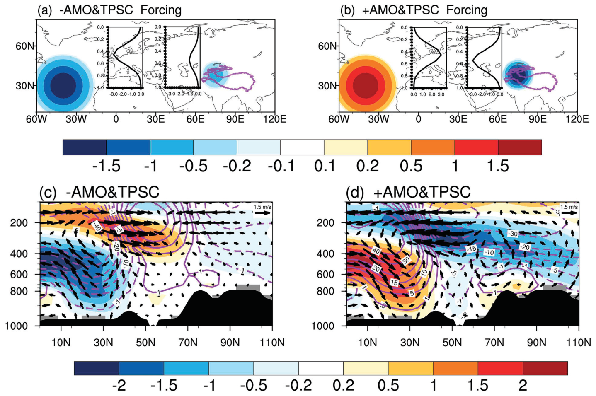
FIG. 16. （a）EXP1和（b）EXP2中理想化热力强迫的水平空间分布（填色；°C）及垂直廓线。
FIG. 16. The horizontal spatial distribution (shading; °C) and vertical profile of the idealized thermal forcings for (a) EXP1 and (b) EXP2.
图中还给出了（c）EXP1和（d）EXP2的模式大气响应，即积分第11–15天平均的35°–50°N经向平均位势高度异常（等值线；gpm）、温度异常（填色；°C）及相应风场（矢量；垂直速度和纬向风）。
Also shown are the model atmospheric response average of 11–15 days of the meridional mean (35°–50°N) anomalies of the geopotential height (contours; gpm), temperature (shading; °C) and corresponding winds (vectors; vertical velocity and zonal wind) for (c) EXP1 and (d) EXP2.
在EXP2中，主要的大气响应表现为从大西洋延伸至西欧的高压异常，并伴随青藏高原上空的低压异常，与WEH–TPL型具有诸多相似之处（Fig. 16d）。
In EXP2, the prevailing atmospheric response is characterized by high pressure anomalies extending from the Atlantic to western Europe, coupled with low pressure anomalies above the TP, which bear many similarities to the WEH–TPL pattern (Fig. 16d).
这一型态与增强的纬向垂直环流相对应，其特征为青藏高原上空上升运动和西欧上空下沉运动，与1998年后观测到的情况一致（Fig. 7）。
This pattern coincides with an enhanced zonal vertical circulation, featuring upward motion on the TP and downward motion over WE, consistent with that in the observations after 1998 (Fig. 7).
相反，在EXP1中，西欧受负高度异常控制，青藏高原上空的环流异常和垂直环流均很弱（Fig. 16c）。
Conversely, in EXP1, WE is dominated by negative height anomalies, and the circulation anomalies above the TP, as well as the vertical circulation, are quite weak (Fig. 16c).
因此，数值模式结果表明，正AMO与偏多的TPSC同时发生时，有利于通过纬向垂直环流形成WEH–TPL型，并导致TPSC–CHW关系增强。
Therefore, the numerical model results indicate that a positive AMO and an excessive TPSC, when they occur concurrently, favor the emergence of the WEH–TPL pattern via zonal vertical circulation, and lead to an enhanced TPSC–CHWs relationship.
模式结果证实了观测分析所揭示的发现。
The model results confirm the findings revealed in the observations.
5. 结论与讨论5. Conclusions and discussion
本研究揭示，1998年后春季TPSC对西欧夏季CHW的影响显著增强。
The present study revealed a significant strengthening of the impact of spring TPSC on summer CHWs in WE after 1998.
我们已证明，TPSC对CHW影响的增强归因于西欧高压—青藏高原西部低压（WEH–TPL）型的强化，而该型态是1998年后青藏高原西部TPSC和AMO均发生年代际变化的结果。
We have demonstrated that the increased TPSC impact on CHWs is attributed to the intensification of a western Europe high–western TP low (WEH–TPL) pattern, which emerges as a result of both the interdecadal changes in the western TPSC and the AMO after 1998.
春季TPSC对西欧夏季CHW影响发生变化的可能机制可概括于Figure 17的示意图中。
The possible mechanism of the changed spring TPSC impact on summer CHWs in WE can be summarized in the schematic diagram of Fig. 17.
1998年后，青藏高原西部TPSC异常的幅度增强，且从春季持续至随后夏季的时间延长，因而表现出更有效调制局地热力异常的能力。
Anomalous western TPSC exhibits enhanced magnitudes and prolonged persistence from the spring into the following summer, demonstrating a more effective ability to modulate local thermal anomalies after 1998.
青藏高原更偏西部的TPSC异常会在青藏高原西部及其周边地区引发显著的深厚对流层低压异常。
The presence of anomalous more western TPSC gives rise to a notable deep tropospheric low pressure anomaly in the western TP and its surrounding regions.
该低压系统东、西两侧相应的上升和下沉运动通过纬向垂直环流维持WEH–TPL型（Fig. 17）。
The corresponding ascent and descent motions on the eastern and western flanks of this low system serve to sustain a WEH–TPL pattern through zonal vertical circulations (Fig. 17).
此外，1998年后的AMO正位相在触发从大西洋向下游传播至欧亚大陆的高层波列方面效能增强，从而为促进西欧与青藏高原之间的联系建立了更有利的背景。
In addition, the positive phase of the AMO after 1998 exhibits enhanced efficacy in triggering an upper-level wave train that propagates downstream from the Atlantic to the Eurasian continent, which establishes a more conducive background for fostering the connection between WE and the TP.
此外，青藏高原西部TPSC和AMO的变化在引起极地急流和中纬度急流显著增强的同时，又削弱中纬度急流方面均发挥关键作用。
Furthermore, the changes in both western TPSC and the AMO play pivotal roles in inducing a significant augmentation of the polar jet and midlatitude jet, concurrently weakening the midlatitude jet.
这种共同影响有利于形成双急流型，进而导致西欧高压增强及CHW发生得更频繁。
This joint influence favors the formation of the double jets pattern, consequently leading to enhanced high pressure and more frequent CHWs in WE.
大气环流对+AMO和偏多TPSC的这种响应可在线性斜压模式试验中得到再现和证实。
Such a response of atmospheric circulations to the +AMO and excessive TPSC could be reproduced and confirmed in the LBM model experiment.
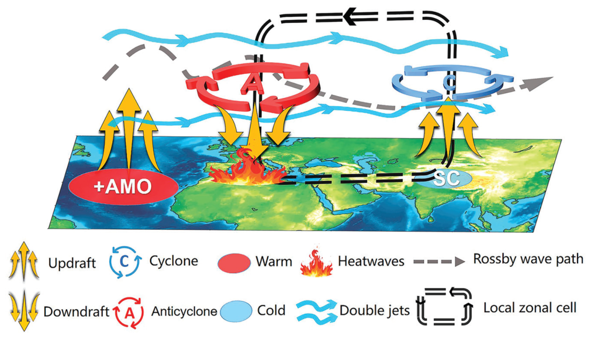
FIG. 17. 偏多TPSC与+AMO共同增强TPSC–CHW关系的示意图。
FIG. 17. Schematic that shows the joint effect of the excessive TPSC and the +AMO in enhancing the TPSC–CHWs relationship.
既有研究提供了TPSC与AMO之间存在强关联的证据（Shen et al. 2011）。
Prior research presented evidence for a strong association between TPSC and the AMO (Shen et al. 2011).
J. Li et al. (2021)提出，在大西洋多年代际变率的正位相期间，北大西洋涛动（NAO）持续处于负位相，并伴随准定常罗斯贝波列；该波列引起异常绝热下沉，进而导致青藏高原变暖。
J. Li et al. (2021) proposed that during the positive phase of Atlantic multidecadal variability, the North Atlantic Oscillation (NAO) exhibits a persistent negative phase and is accompanied by a quasi-stationary Rossby wave train, which induces anomalous adiabatic descent and results in warming over the TP.
然而，在大西洋多年代际变率的负位相期间，NAO与青藏高原温度变化之间的联系减弱。
However, the connection between the NAO and temperature variations over the TP weakens during the negative phase of Atlantic multidecadal variability.
我们的研究强调，春季TPSC与西欧夏季CHW之间的联系受到AMO和TPSC二者变化的影响。
Our study underscores that the linkage between spring TPSC and summer CHWs in WE is impacted by variations in both AMO and the TPSC.
北大西洋SST、AMO与TPSC之间的相互作用值得进一步研究，它们各自对西欧CHW的贡献亦然，这些问题应成为未来研究的重点。
The interplay between the North Atlantic SST, the AMO, and TPSC warrants further investigation, as does their respective contributions to CHWs in WE, which should be the focus of future studies.
致谢Acknowledgments.
本研究得到国家自然科学基金（项目号42075050）和中央高校基本科研业务费专项资金（K20220232）的资助。
This research is funded by the National Natural Science Foundation of China (Grant 42075050) and Fundamental Research Funds for the Central Universities (K20220232).
数据可用性声明Data availability statement.
积雪覆盖（SC）周气候数据记录取自罗格斯大学全球积雪实验室（http://climate.rutgers.edu/snowcover）。
The weekly climate data record for SC is retrieved from the Rutgers University Global Snow Lab (http://climate.rutgers.edu/snowcover).
月度气象数据取自ERA5（https://www.ecmwf.int/en/forecasts/dataset/ecmwf-reanalysis-v5）和英国气象局哈德莱中心（https://www.metoffice.gov.uk/hadobs/hadisst/）。
The monthly meteorological data are obtained from ERA5 (https://www.ecmwf.int/en/forecasts/dataset/ecmwf-reanalysis-v5) and the Met Office Hadley Centre (https://www.metoffice.gov.uk/hadobs/hadisst/).
月度AMO指数取自NOAA（https://climatedataguide.ucar.edu/climate-data/atlantic-multi-decadal-oscillation-amo）。
The monthly AMO index is from NOAA (https://climatedataguide.ucar.edu/climate-data/atlantic-multi-decadal-oscillation-amo).
逐日UTCI指数可在线获取（https://cds.climate.copernicus.eu/cdsapp#!/dataset/derived-utci-historical?tab=form）。
The daily UTCI index is available online (https://cds.climate.copernicus.eu/cdsapp#!/dataset/derived-utci-historical?tab=form).
网格化人口数据可在线获取（https://sedac.ciesin.columbia.edu/data/set/gpw-v4-population-density-adjusted-to-2015-unwpp-country-totals-rev11）。
The Gridded Population is available online (https://sedac.ciesin.columbia.edu/data/set/gpw-v4-population-density-adjusted-to-2015-unwpp-country-totals-rev11).
补充材料Supplementary Information
以下期刊的补充材料：
Supplementary Information for
Journal of Climate https://doi.org/10.1175/JCLI-D-23-0630.1
Journal of Climate https://doi.org/10.1175/JCLI-D-23-0630.1
1998年后春季青藏高原积雪覆盖对西欧夏季复合热浪影响的增强
Intensified Impact of Spring Tibetan Plateau Snow Cover on Summer Compound Heatwaves in Western Europe after 1998
Wei Dong、XiaoJing Jia*和Renguang Wu
Wei Dong, XiaoJing Jia* and Renguang Wu
中国浙江省杭州市，浙江大学地球科学学院，浙江省地学大数据与深部资源重点实验室。
Key Laboratory of Geoscience Big Data and Deep Resource of Zhejiang Province, School of Earth Sciences, Zhejiang University, HangZhou, Zhejiang, China.
通讯作者：XiaoJing Jia，jiaxiaojing@zju.edu.cn
Corresponding author: XiaoJing Jia, jiaxiaojing@zju.edu.cn
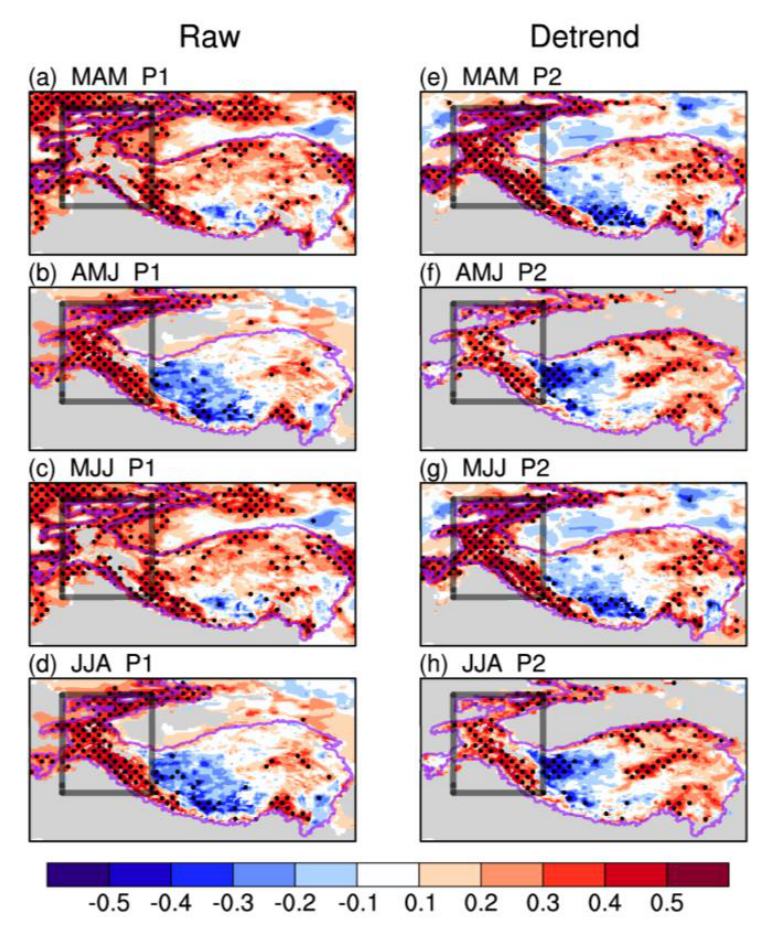
Figure S1. 1979—2021年，（a）—（d）ERA5原始积雪覆盖和（e）—（h）去趋势积雪覆盖与NOAA青藏高原积雪覆盖（TPSC）指数同期相关的空间分布图，其中（a）和（e）为MAM（三月—四月—五月），（b）和（f）为AMJ（四月—五月—六月），（c）和（g）为MJJ（五月—六月—七月），（d）和（h）为JJA（六月—七月—八月）。
Figure S1. Contemporaneous correlation maps of (a)–(d) raw and (e)–(h) detrended ERA5 snow cover to the NOAA Tibetan Plateau snow cover (TPSC) index for 1979 to 2021 during (a) and (e) MAM (March–April–May), (b) and (f) AMJ (April–May–June), (c) and (g) MJJ (May–June–July), (d) and (h) JJA (June–July–August).
点状区域表示置信水平超过95%。
Dotted regions denote confidence levels exceeding 95%.
灰色方框表示青藏高原西部区域（31°–43°N，69°–80°E）。
The gray boxes represent the region of western TP (31°–43°N, 69°–80°E).
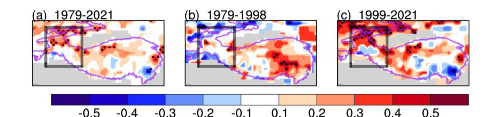
Figure S2. （a）1979—2021年、（b）1979—1999年（P1）和（c）2000—2021年（P2）期间，TPSC与西欧夏季CHW指数〔西欧（25°–50°N，10°W–30°E）CHW的面积加权平均〕之间的相关分布图。
Figure S2. Correlation maps between TPSC and the summer Western Europe CHWs index (area-weighted averaging of CHWs in WE (25°–50°N, 10°W–30°E)) during (a) 1979–2021, (b) 1979–1999 (P1) and (c) 2000–2021 (P2).
点状区域表示置信水平超过95%。
Dotted regions denote confidence levels exceeding 95%.
灰色方框表示青藏高原西部区域（31°–43°N，69°–80°E）。
The gray boxes represent the region of western TP (31°–43°N, 69°–80°E).
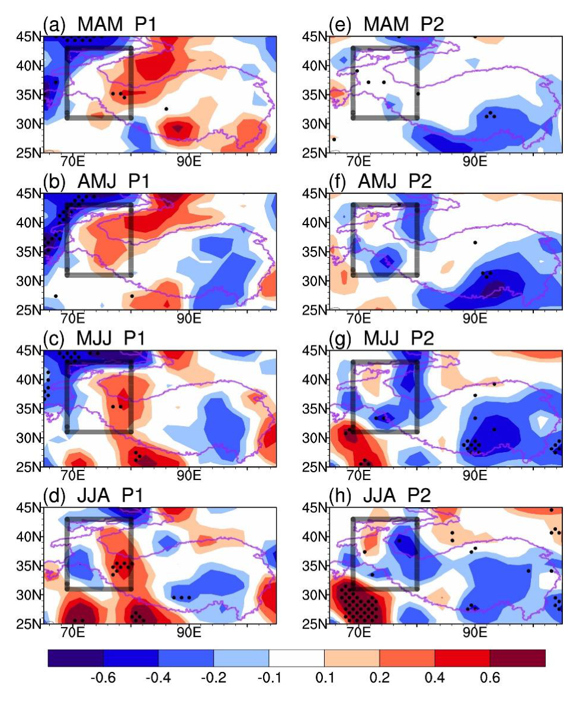
Figure S3. 根据春季TPSC指数进行线性回归得到的（a）—（d）P1时期和（e）—（h）P2时期潜热通量异常（单位：W·m−2）。
Figure S3. Latent heat anomalies (unit: W·m−2) for (a–d) P1 and (e–h) P2 obtained by linear regression against the spring TPSC index.
（a，e）、（b，f）、（c，g）和（d，h）分别为MAM、AMJ、MJJ和JJA。
(a, e), (b, f), (c, g) and (d, h) are MAM, AMJ, MJJ and JJA, respectively.
黑色点状区域表示置信水平超过95%。
Black dotted regions denote confidence levels exceeding 95%.
灰色方框表示青藏高原西部区域（31°–43°N，69°–80°E）。
The gray boxes represent the region of western TP (31°–43°N, 69°–80°E).
垂直通量以向上为正。
The vertical fluxes are positive upwards.
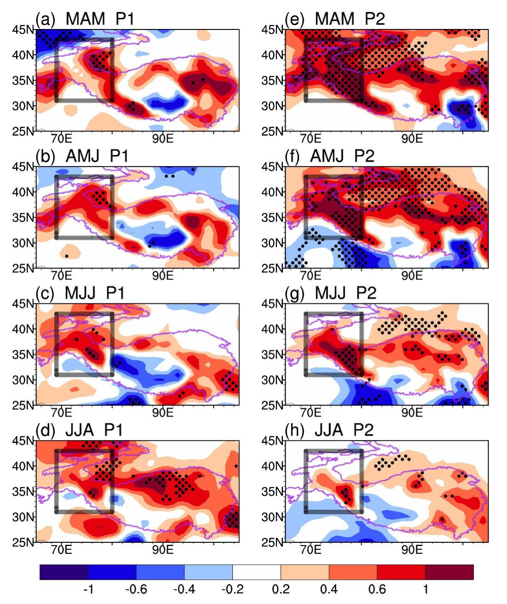
Figure S4. 根据春季TPSC指数进行线性回归得到的（a）—（d）P1时期和（e）—（h）P2时期地表净短波辐射通量月平均值异常（单位：1 × 105 W·m−2）。
Figure S4. Mean surface net short-wave radiation flux anomalies (unit: 1 × 105 W·m−2) for (a–d) P1 and (e–h) P2 obtained by linear regression against the spring TPSC index.
（a，e）、（b，f）、（c，g）和（d，h）分别为MAM、AMJ、MJJ和JJA。
(a, e), (b, f), (c, g) and (d, h) are MAM, AMJ, MJJ and JJA, respectively.
黑色点状区域表示置信水平超过95%。
Black dotted regions denote confidence levels exceeding 95%.
灰色方框表示青藏高原西部区域（31°–43°N，69°–80°E）。
The gray boxes represent the region of western TP (31°–43°N, 69°–80°E).
垂直通量以向上为正。
The vertical fluxes are positive upwards.